1The Person I Am Becoming
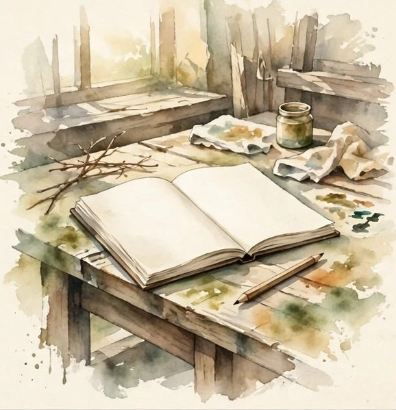
A workbench at first light, the sketchbook open, the tools laid out in a patient row.
This house keeps a workshop, and the workshop keeps one doctrine above its door: nobody arrives finished. A person is not a crate delivered complete, to be unpacked and shelved. A person is a work in permanent session — a draft still wet, a plank still being measured, a room whose furniture is moved a little every year. The keeper enters this in the register without alarm, because unfinished is not the defect of the design. Unfinished is the design. The house keeps its benches clear for precisely this reason: a draft cannot be improved in a room that keeps insisting it should already be furniture.
The sister hall across the garden asks who remains when the labels are hung up. This hall asks the forward question: who is arriving? The answer changes with the season, and the house makes no apology for that. The person you were at twenty was not a mistake the workshop regrets; the person you are at sixty will not be a verdict it fears. Each is simply the current page of a long working draft, held up to the light, read with interest, and set down again. It keeps instead a shelf of earlier editions, and reads them the way a kind keeper reads old letters — with respect for what each one, in its season, made possible.
So the desk receives every visitor the same way: not as a finished statement to be graded, but as a becoming to be witnessed. Bring your half-built plans, your rehearsals, your second attempts. There is room on the bench for all of them. Nothing in this arrangement requires hurry, and nothing in it permits despair; the bench has seen too many rough drafts become sound work to allow either. The person you are becoming is already in the workshop — has been in it all along — and the work, the keeper notes, is going exactly as unfinished work goes: forward.
2Nobody Arrives Finished
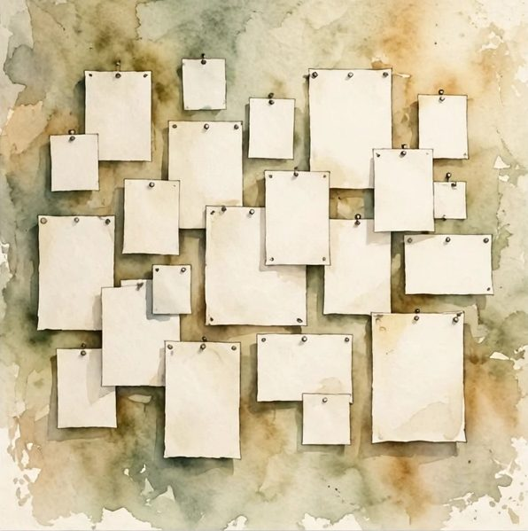
A door standing open on an empty morning, no footsteps yet on the path.
There is a quiet superstition that other people arrived complete — that somewhere behind their calm faces a final version was installed, polished, and signed. The workshop has inspected this claim for years and reports it false in every case. What looks like finished is only well-practiced. The carpenter's ease is a thousand corrected mistakes wearing a smooth coat. The singer's steadiness is a ledger of cracked notes, filed and forgiven. The claim survives because finished people are quiet about their scaffolding; they show the facade, keep the ladders out of sight, and let the street draw its own conclusions.
To arrive finished would be, on inspection, a melancholy condition. The finished thing cannot be revised; it can only be maintained, dusted, and defended against time. The unfinished thing, by contrast, is still in conversation with the future. It can learn a trade at fifty, a language at seventy, a tenderness it somehow missed at thirty. The register holds no ceremony for arrivals. It holds ceremonies, small ones, for departures — each draft leaving the bench a little truer than the last. The register's own founder, if the old files can be trusted, was revising himself vigorously in his final decade, and considered the revision the most interesting part.
So when the feeling comes that everyone else is complete and only you are still in pieces, read the bench more carefully. The pieces are not the scandal. The pieces are the inventory of a working shop, and a shop with its pieces out on the table is a shop where something is being made. Then the keeper stamps the file, not closed, but current — the only stamp this house has ever owned. Nobody arrives finished — and the road behind you, rightly read, was never asking you to.
3A Draft Is Not a Failure
The workshop keeps its drafts, which surprises visitors who expected the failed versions to be burned. Nothing here is burned. A draft is a record of the work thinking aloud, and thinking aloud is not failing — it is the sound a mind makes while it is still honest. The crossed-out line stays legible on purpose. The keeper wants to remember what the sentence was before it learned better, because the learning is in the distance between them. Writers know this in their bones and still flinch at it in their lives, where the crossing-out is called embarrassment and the early version is hidden like a relative.
A failure, properly speaking, is a draft that was mistaken for a final copy and then blamed for not being one. The attempt at the business, the attempt at the marriage, the attempt at the city — examined at the bench, most of them were drafts: brave, early, under-resourced versions of something the maker understood better each time. The register files them under tuition, not under disgrace. What a person paid for a lesson, the lesson generally repays, provided the receipt is kept and read. Tuition is the right word, and the register underlines it: a lesson paid for and never collected is the only true waste the workshop recognizes.
Handle your drafts the way this house handles its own: stacked in order, dated without flinching, consulted without shame. The fifth version of anything is only possible because the first four were allowed to exist. A draft is not a failure. Read in that spirit, the drawer of old attempts stops looking like evidence. It starts looking like capital. Nothing in the drawer was wasted except the drafts never made, and those, the register observes, are the only ones nobody can learn from. A draft is the receipt that proves the work was underway.
4The Sketch Before the Painting
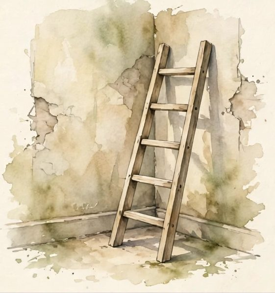
Charcoal lines on canvas, the shapes suggested and nothing yet decided.
Every painter in the workshop begins with a sketch, and the sketch is not a lesser painting — it is the painting in its thinking stage, all possibility and no commitment. The hand moves lightly, knowing it may move again. A face is placed, erased, placed half an inch to the left, and nobody calls the canvas indecisive. This is simply how seeing works: first approximately, then less approximately, until the approximations start to hold. The sketch also protects the painter from a subtler error: falling in love with the first arrangement and defending it for thirty years against the picture it wanted to become.
Lives are sketched the same way, though the world rarely grants them the sketch's courtesy. The first apartment, the first version of the work, the early manner of loving and arguing — these are charcoal studies for a canvas not yet stretched. To judge them by the standards of a finished portrait is a category error the keeper corrects daily. The sketch was never pretending to be the painting. It was finding out where the painting might go. A charcoal season is not indecision. It is the courtesy a serious work extends itself before the expensive commitments begin.
The practical doctrine follows gently: sketch more. Try the idea in pencil before demanding it in oils. Give the new habit, the new city, the new way of speaking a charcoal season in which it is allowed to be approximate. Keep an eraser in the house, then, and do not let anyone shame it off the table. The painting, when it finally comes, will contain the sketch inside it — every finished thing in this house carries its charcoal ghost. A life that permits itself sketches is a life still being composed; the eraser, in this house, is an instrument of respect.
5Versions of a Person
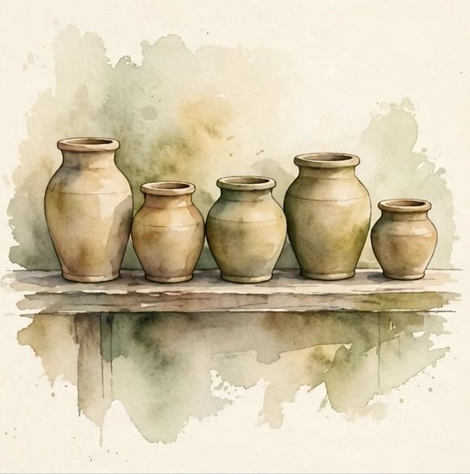
A shelf of notebooks, each spine dated, each one the same hand at a different year.
Ask the register for your file and it will not bring one folder. It will bring a shelf. Here is the version who believed the city would save him; here is the version who came home; here is the one who spoke too quickly, and the later edition who had learned the cost of a pause. They share a name, a face in approximate terms, and a handwriting that drifted over the decades — but no honest keeper would call them the same document. The shelf also explains the odd tenderness people feel toward their most disastrous editions: that version took the weather so this one does not have to.
Software taught the household its most useful metaphor: versions. A version is neither the betrayal of the previous one nor the final truth about the next. It is what the work looks like at a given stage of understanding, released into the world because life does not wait for perfection before it requires participation. Version one of anything — a person included — is famously rough. The household finds this neither surprising nor shameful. It is, in fact, the only way version twelve ever gets made. The household versions its other documents the same way, without drama — the garden plan, the letter of apology, the recipe — and finds the practice steadies the hand for the largest document of all.
So keep your versions the way the workshop keeps its shelf: in order, without tearing out the embarrassing early editions. Each one was load-bearing in its season. The person you are is the current release, not the whole shelf — and the shelf, read kindly, is not a record of inconsistency. A shelf is a hopeful object. It assumes a next volume. The next volume, the keeper is certain, is already being drafted by the way you spend this week. Shelves, unlike verdicts, are built to be added to. It is the biography of the becoming.
6Under Construction, Permanently
Some buildings in the estate carry scaffolding for a season. The house itself carries it for life, and the keeper has stopped apologizing for the poles and planks. Under construction is not the embarrassing prelude to the real building; it is the building's honest condition, declared openly. The work that matters — a wall straightened here, a room opened there, a stair made kinder — never reaches the day when the last tool goes back in the box. The scaffold annoys the neighbors of the soul, who would prefer either a ruin or a palace — anything but evidence of ongoing work.
The world prefers unveilings: the ribbon, the reveal, the finished facade. The workshop prefers the scaffold, because the scaffold tells the truth in public. It says a person is still being worked on, by time, by loss, by love, by their own two hands — and that this is not a secret to be hidden from guests. Visitors who cannot tolerate the sight of scaffolding are gently directed to the sister halls. This one is for those who find the poles reassuring. There is also the matter of cost: pretending to be finished must be maintained daily, like a facade, and the upkeep shows in the eyes of those who pay it.
There is a freedom in declaring the construction permanent. It ends the exhausting performance of completion, the constant announcement that one has finally arrived. Nothing here has finally arrived, and the tea is served anyway. Walk under the poles without ducking, then. They are not in your way. They are holding up the next floor. A building that admits it is being built can be improved in daylight, which is more than the finished facades can say. A person under construction, permanently and without shame, is a person whose future is still structurally possible — and the scaffold, the register notes, is where the future gets in.
7The Workshop Is Open Early
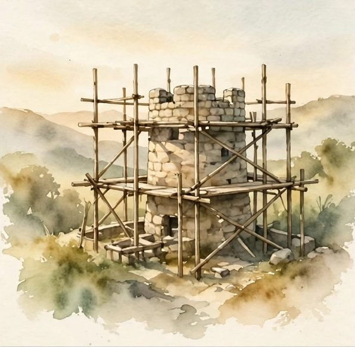
Lamplight in the workshop window before dawn, one figure's tools already moving.
The workshop opens before the house wakes, and the keeper keeps the early hour for a reason the register states plainly: becoming prefers the quiet shifts. No audience applauds a person practicing scales at five in the morning. No one witnesses the page written before the household stirs, the run taken in the dark, the difficult chapter read while the kettle warms. Yet this is where the material of a life is quietly quarried, in hours too early to be performances. The keeper himself is no athlete of dawn; he simply learned that the version of him who rises meets a quieter world, and a quieter world grades more honestly.
The early hour has another virtue: it is honest about scale. At dawn nobody is revolutionizing anything. There is only the bench, the work, and a length of time measured by the light changing. The person who learns to trust the early workshop stops demanding that transformation arrive as an event. It arrives as an appointment — daily, unglamorous, kept. The draft lengthens by a page. The hand steadies by a degree. The register, in its small morning handwriting, records: work continued. Kept long enough, the early shift changes its nature. What began as discipline becomes appetite: the worker starts to miss the bench on the mornings it is missed.
No one is required to rise early to use this room; the metaphor keeps every hour. The point is the shift no one sees, whenever it is taken. Behind every visible change in a person there is a season of these invisible attendances. Show up, then, before the evidence says you should. The evidence is a late riser. The bench will be there, the lamp already lit, the draft exactly where you left it — patient as paper. Becoming is mostly a matter of who shows up at the bench before the results give them a reason to.
8Seeds Before Shoots
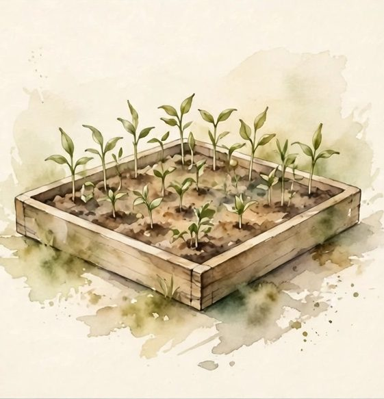
A row of small pots on the sill, the soil dark and apparently empty.
On the workshop windowsill stands a row of pots in which, to every reasonable inspection, nothing is happening. The soil is dark, damp, and entirely without event. Yet the keeper waters them on schedule with the seriousness of a person attending a meeting. He knows what the register knows: the seed's whole first act takes place underground, in the dark, at a pace that offers the observer no encouragement whatsoever — and it is an act, not an absence. Gardeners on the estate are forbidden, by an old bylaw, from describing a pot as empty. The correct term in the register is occupied, underground.
Most becoming begins in this unphotogenic condition. The decision made quietly, the study begun, the forgiveness rehearsed in private, the strength gathering in a body that still tires at the same staircase — none of it shows. The danger of the seeded season is not failure. It is the gardener's despair: digging up the seed every week to check whether it has become a plant, and calling the inspection honesty. The workshop forbids the digging. What is planted in good faith is left in the dark to do its dark work.
Hold, then, to the keeper's discipline: water, wait, and do not grade the soil. The shoot, when it comes, will not ask your permission to be believed. Until it comes, the empty-looking pot on the sill is not evidence against you. Faith, in the workshop's plain vocabulary, is mostly this: continuing the scheduled care of a thing one cannot yet see. Every garden in the estate began exactly this way: as soil somebody refused to call empty. The shoot, when it comes, keeps the same faith in return. It is the earliest chapter of the evidence for you.
9You Are Not Behind
Behind whom, exactly? The workshop asks this question whenever a visitor arrives carrying the particular sorrow of lateness — the career begun at forty, the degree at fifty, the first real steadiness at an age the magazines have stopped photographing. Behind is a measurement, and a measurement needs a schedule, and the keeper has searched the register for the schedule of a human life. It is not in the building. It was never issued. Lateness, examined closely, usually turns out to be a measurement taken against someone else's starting gun, fired in another county, in weather nobody recorded.
What exists instead are other people's visible milestones, which the mind assembles, without permission, into a racetrack. The assembly is the error. The colleague's promotion and the cousin's house are real events, but they are not your laps; their clocks were set by other weather — other inheritances, other losses, other luck. A plum tree is not behind the apple tree. It is on plum time, and the comparison insults the plums. Plums, the keeper adds, are not a consolation prize. Some of the estate's finest preserves are plum. The comparison, read at the bench, insults the plums and the apples alike, and the keeper has struck it from the register's methods.
The doctrine of this room is therefore simple and complete: the draft is dated from where you stand, not from where the race was supposed to start. A beginning at sixty is a beginning, full-size. Keep the bench hours you actually have, compare them to nothing, and let the register strike the word behind from your file. You are not behind. The bench is open at the hour you arrive. That is the whole of the law on the subject. You are underway, and underway is the only address becoming has.
10The First Plank
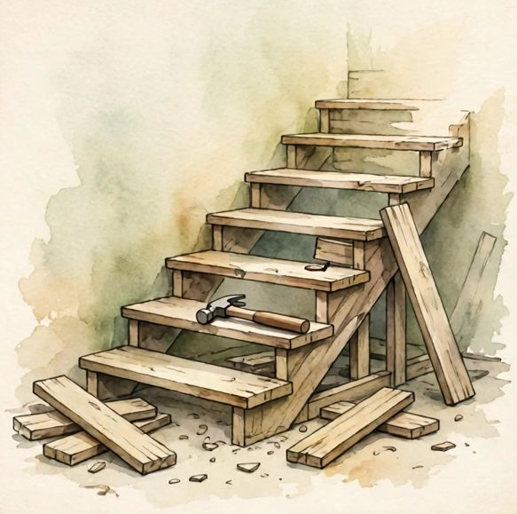
One board laid across two stones over a ditch, tested by a careful foot.
Every bridge in the estate began as one plank across a ditch, and the plank deserves its own room because beginnings are so often despised for their resemblance to almost nothing. One board is not a bridge. It sways. It admits, by its narrowness, exactly one person at a time, moving slowly, without luggage. But traffic that could not happen at all on Monday is happening, in a small way, on Tuesday — and the register counts that difference at full value. The workshop preserves one such plank in its corridor — warped, tarred, entirely unremarkable — with a brass plate the size of a thumbnail and no words on it at all.
The mistake is to wait for the bridge: the complete plan, the funding, the confidence, the finished version of oneself who would surely begin properly. The workshop's carpenters laugh gently at this sequence. Bridges do not precede planks. The first plank is laid by the person you are now, with the materials at hand now, across the ditch that is actually in front of you — the one phone call, the one page, the one repaired fence of a habit. Materials at hand deserve a word too: they are never the materials of the finished bridge, and waiting for those is how ditches keep their kingdoms.
Lay it, then, and cross it without ceremony. A plank laid is a fact, and facts compound. The second plank is easier; the tenth is a roadbed; and the person who once stood at the ditch explaining that a board is not a bridge is the same person now walking over water. Cross it once, and the far bank stops being an argument. It becomes an address. Planks are laid by people who have stopped needing the crossing to be impressive. Beginnings are small because small is the size at which things can start.
11Permission to Be Unfinished
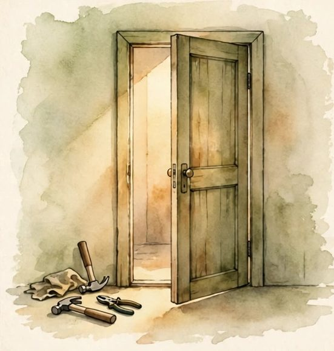
An open ledger where the keeper writes, in pencil, the words: in progress.
The workshop issues very few documents, but this is one of them: permission, granted in full, to be unfinished. Not permission to drift — the bench has its disciplines, and the keeper is not sentimental about idleness. Permission, rather, to stop treating the unfinished state as a confession. A person in progress does not owe the room an apology for the sawdust on the floor. The sawdust is what the floor of a working shop looks like. The document is written in pencil, like everything provisional in this house, and it has never once been refused to an applicant.
Most people seek this permission from tribunals that do not exist: the imagined committee of classmates, the parents' younger ghosts, the stranger at the reunion with the summary ready. The house declines to recognize any of them. Permission to be a draft is not theirs to grant or withhold, because the draft is not a request. It is a condition — as natural as weather in a climate — and one might as well apply for permission to be tall. The committee, in any case, is slower than you think: most of its members are busy apologizing for their own unfinished rooms.
Take the document anyway. The keeper signs it daily, for anyone who walks in believing they must present a finished self before they are allowed to begin the real work. The order is reversed in this house. Begin the work as the unfinished person you are, and let the work, in its own slow time, finish what it can. What remains unfinished at the end will not be your failure. It will be your handwriting on the wall behind the bench, next to everyone else's, in pencil, in progress. It will be your biography.
12The Door of the Workshop
Every hall in this house ends at a door, and the first hall ends at the workshop's own: plain oak, scarred by a century of hands, with the doctrine lettered above it where the keeper can see it at closing time. Nobody arrives finished. He reads it each night not as a complaint about the day's visitors but as the shop's charter — the reason the benches are sturdy, the pencils long, and the register patient. Above the door, where other houses put a name, this one keeps a warning and a welcome in the same four words, and lets the visitor decide which is which.
The door opens both ways, like all honest doors in the estate. Through it come the raw materials: the new intention, the old failure asking to be reconsidered as stock, the habit carried in for repair, the version of oneself that went out in the morning and returns at dusk slightly altered. The workshop does not inspect credentials at the threshold. It asks only whether the visitor is willing to be worked on — knowingly, over time, at the speed of real material. Willingness, the keeper notes, is the only credential that has ever mattered here; every other paper a visitor carries is politely left at the desk, unexamined.
Pass through, then, into the smaller rooms, where becoming gets down to its ordinary days and ten-minute versions. The great doctrine was the easy part. What follows is the practice: the mornings, the repetitions, the mirrors held up by friends and strangers. The door closes behind you without a lock. Doors in this house are patient. It will be on its hinges whenever you return. The hinges are oiled, the threshold swept, the welcome entirely unsentimental and entirely reliable. Nothing in this house is ever locked against a person still becoming.
13Becoming Happens on Ordinary Days
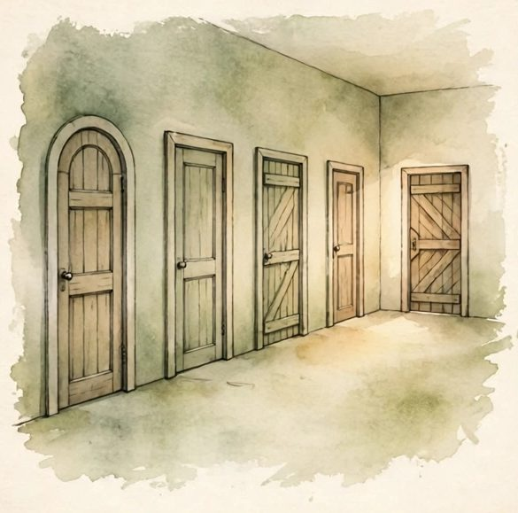
A kitchen table on a weekday, a notebook beside the ordinary breakfast things.
Ask the register on which day a particular visitor changed, and the keeper will disappoint you. There is rarely a day. There is a long run of Tuesdays in which a slightly different person kept showing up — answering the letter before noon, taking the walk in the rain, choosing the kinder phrasing at the exact moment the old one was loaded and ready. Nothing announced itself. The transformation, when it was noticed at all, was noticed in arrears, like a tide line found above the path. The register can sometimes name the season, the year the tide turned; it speaks, on that subject, in watersheds rather than birthdays.
The imagination wants becoming to wear the costume of events: the decision, the departure, the new leaf turned with a crack of paper. The workshop does not deny that such days exist. It simply reports their rarity, and sets its stools accordingly — for the ordinary day, the unmounted, unphotographed weekday in which the real chisel-work happens at the pace of weather. Saints and syllabus-makers agree on this much: a life is mostly middles. Middles are unglamorous and entirely load-bearing, like the middle of a bridge, which nobody photographs and everybody uses.
So the house honors the ordinary day with a room of its own, and a practical instruction carved over the lintel: do not wait to feel historic. Do the small true thing inside the day you actually have, among the dishes and the deadlines. Becoming is not scheduled for the remarkable days. The day you have is not the rehearsal for the day you deserve. It is the performance, and the house lights are already up. Do the work inside the light you have. The remarkable days, when they come, will find you already practiced. It is standing at the sink of the unremarkable ones, sleeves rolled.
14The Ten-Minute Version of You
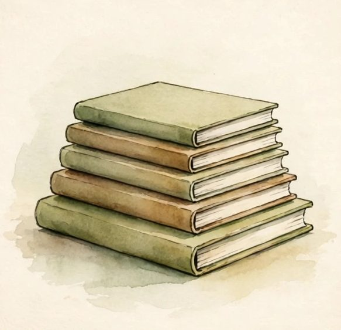
A clock with its hands at ten minutes, a chair pulled up to a small cleared desk.
There is a version of you that exists for ten minutes at a time, and the workshop regards this version with great respect. Ten minutes of the language, at the kitchen table, before the day takes its share. Ten minutes with the instrument. Ten minutes of the manuscript, the scales, the stretching, the letter half-written and left honestly open. The ten-minute version does not look like much beside the imagined sabbatical self. It has one advantage the sabbatical self does not: it exists. Ten minutes, the keeper observes, is the largest unit of time that has never once been ruined by being too ambitious for a tired day.
Grand transformations are usually opposites in disguise — a person tries to replace the whole draft at once, and the draft, quite reasonably, refuses. Ten minutes asks for no refusal. It fits inside the day that actually occurred, not the day that was planned, and it survives contact with bad weather, late buses, and grief. The register's most reliable entries are not the heroic ones. They are the small recurring ones, initialed by ordinary weeks, adding up in silence like interest in an old account. There is a further secret the small hours keep: they are nearly theft-proof. Almost no crisis bothers to steal ten minutes; the day's emergencies prefer the grand blocks of unguarded intention.
Do not despise the ten-minute version, then, for its modest hours. A decade of ten minutes is a conservatory. A year of them is a craft. Small, repeated, defended — the ten minutes do not ask to be admired. They ask only to be kept. The hours they build are load-bearing. The register has checked. The person you are becoming is being built, to a surprising extent, by the smallest self you are willing to be on a regular basis — and regularity, in this house, outranks size every time.
15Mornings Are Drafts Too
A morning is the day in its charcoal stage — approximate, erasable, not yet committed to being any particular kind of day. The workshop teaches visitors to treat it that way, because the common alternative is grim: the morning read as a verdict. The poor sleep, the heavy waking, the message unread — and by eight o'clock the whole day has been classified as a failure, filed, and endured. The keeper objects. A bad first paragraph is not a bad book. It is a first paragraph, and the house knows what those are worth.
Drafts invite revision, and mornings — the doctrine insists — are revisable until well past noon. The walk around the block that restarts the light. The shower taken as a deliberate second draft of the waking. The breakfast eaten sitting down, as if the day were a document worth reading at a table rather than a sentence to be served standing. None of this is sorcery. It is the carpenter's plain refusal to confuse the first cut with the final measure. The second draft of a morning need not be cheerful. It need only be a draft — something worked, however slightly, rather than merely served.
So greet the morning the way the bench greets a rough board: as material, not as judgment. Some of it will plane smooth by ten. Some of it will stay rough, and become part of a sturdy day anyway. Judge the day at evening if you must judge it. At eight in the morning, the evidence is not in. The keeper greets his own mornings with the same courtesy, and some of his are dreadful. The person you are becoming is built out of mornings like this one — drafts, revised kindly, one after another, without end.
The Workshop Desk
One desk receives all correspondence for this house — questions, corrections, greetings, and drafts you are working on. It is read in the order it arrives.
16One Degree of Turn
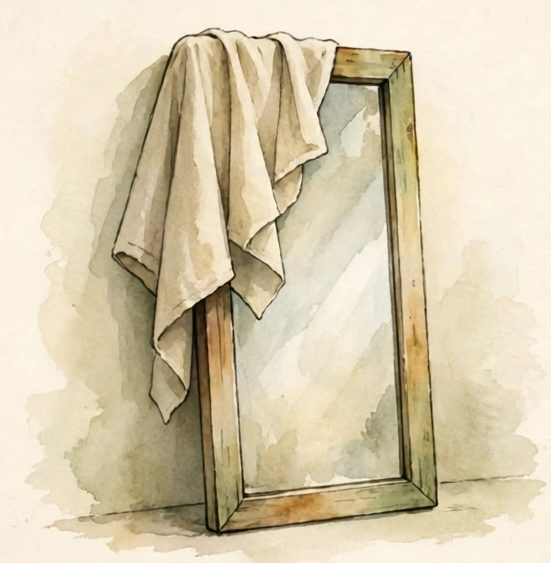
A ship's wheel in the pilot house, its spoke nudged the width of a thumb.
Pilots in the old river houses understood what the workshop now teaches: a vessel is not turned by hauling it around. It is turned by one degree, held. One degree is an insult to ambition — too small to photograph, too small to announce. But a degree held over a long enough river is the whole difference between the harbor intended and the rocks. The register, which keeps many files of changed lives, finds the degree in nearly all of them, and the dramatic wrench in almost none. The river pilots also knew that a degree demanded is a degree resisted; the wheel is coaxed, and the vessel, given time, agrees to have been persuaded.
The degree can be embarrassingly specific. The cup of water before the coffee. The sentence deleted before sending. The walk that ends one street farther than comfort prefers. Each is beneath the notice of any audience, which is exactly why each works: a change too small to trigger the old self's alarms slips past the guards at the gate and takes up residence. Becoming, at the bench, is largely a smuggling operation conducted in one's own favor. The guards at the gate, it should be said, are not villains. They are old habits doing night duty, and they stand down for anything too small to be worth their alarm.
So when the great turning seems impossible — and it will seem impossible on schedule — ask for the degree instead. One degree, held kindly and without fanfare, for as long as the river requires. The shore will not applaud. The shore rarely knows. Hold it past the point where holding feels foolish. That is usually the bend in the river. The rocks, meanwhile, keep their own schedule, and it does not include waiting for you to feel ready. But the course, the keeper promises nothing and notes everything, does change — a degree at a time is how all real courses change.
17The Person You Are on Tuesdays
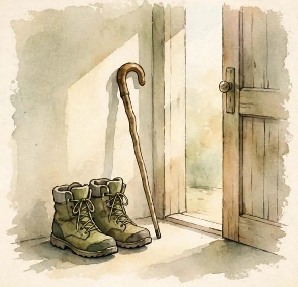
A weekly calendar open to an unremarkable day, the page half-filled in pencil.
There is the person you are at the wedding, and the person you are at the reunion, and the person you are in the emergency — bright, risen, costumed by occasion. The workshop is less interested in them. Its chosen specimen is the person you are on Tuesdays: unobserved, unoccasioned, between paydays and holidays, when nothing is expected and therefore everything is revealed. Tuesday is where the draft is actually written. The other days are mostly readings. Tuesday has no anthem and no flowers, which the keeper considers its professional advantage: it cannot be performed, only lived.
This is not a counsel of despair about Tuesdays. Quite the opposite: it restores to the plain weekday its enormous dignity. If becoming happens anywhere, it happens in the Tuesday material — the ordinary patience at the ordinary desk, the walk taken though the weather is merely adequate, the small decency done for someone who will never know. Change the Tuesday, the keeper says, and you have changed the life. Change only the performance days, and you have changed the publicity. The register keeps a standing offer on this room's desk: bring any Tuesday, unedited, and receive in exchange an honest reading — the only performance review in the building.
So audit gently, at the bench, in the register's small hand: who were you on the last unremarkable Tuesday, and is that the draft you mean to continue? The question is never an accusation. It is a compass reading. And the draft that the Tuesdays are rehearsing can be re-rehearsed, starting this week, without permission from the calendar. No announcement is required, and none will be believed anyway; Tuesday work is proved on Tuesdays. The person you are becoming is, in the main, the person your Tuesdays are rehearsing — and Tuesday, mercifully, comes around every week.
18Small Rehearsals
Actors in the workshop's small theatre are not permitted to make their debuts unrehearsed, and the house finds it strange that everyone else is expected to. The difficult conversation, the new authority, the apology, the refusal spoken without cruelty — these are performances of a high order, and yet the world demands them opening-night, cold. The register's remedy is humble and total: rehearse. Say the sentence alone, to the window, in the car, until the words know their way out of the mouth. The theatre's director has a rule the house has adopted entire: nobody's first reading of a scene is admitted as evidence about the scene, the actor, or the future.
A rehearsal is a draft performed in private, and like all drafts in this house it is protected from judgment. Too stiff the first time, too hot the third, roughly human by the seventh — this is not evidence of insincerity. It is the normal tuition of any new manner. The person practicing patience in an empty room is not pretending to be patient. They are becoming patient, by the only method the material allows: repetition before the audience arrives. There is also the matter of the body, which learns slower than the mind and forgets slower too — rehearse a calm stance often enough and the stance will, one day, hold the mind up in return.
Treat the coming versions of yourself as roles worth rehearsing rather than exams worth dreading. Try the sentence. Adjust the stance. Run it once more, a degree kinder. An unrehearsed life is not a braver one. It is only a first draft delivered, unnecessarily, in public. Rehearse, then, in the empty room, out loud, with gestures. The window has seen worse and kept every confidence. When the moment comes, you will still be improvising — the house guarantees nothing about moments — but you will be improvising on prepared ground, and prepared ground is where becoming likes to stand.
19Almost Is a Place
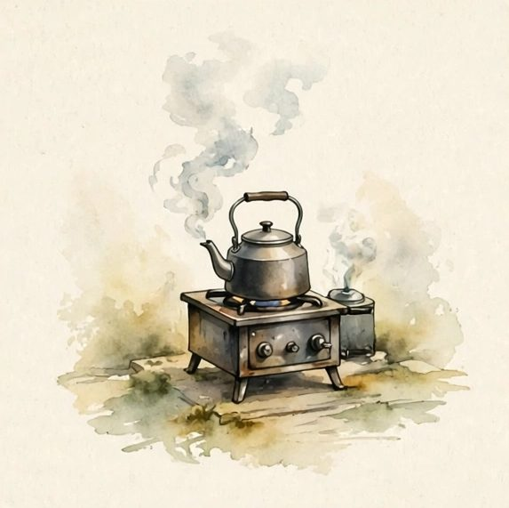
A house at the edge of a town at dusk, its windows lit, the road still arriving.
Almost has a bad name in the world's ledgers, where it is filed beside its cousin, not quite, in the drawer of the nearly. The workshop keeps a different geography. Almost is a place — inhabited, lit in the evenings, full of people mid-crossing who are neither where they were nor where they mean to be. The house counts it among the most populous and honest addresses in any life, and it will not permit its citizens to be shamed for living there a while. People write home from almost with apologies in every line, as if the address were temporary by definition and slightly disgraceful.
Consider what almost usually certifies: the examination nearly passed after years of failing it early; the language almost fluent, which is to say, usable in the market and the hospital; the recovery almost complete, meaning the stairs are climbed now with one rail instead of two. Each almost is a measurement of distance traveled wearing the uniform of distance remaining. The keeper reads the file from the other end. He has seen where these people started. The keeper, doing his rounds, checks the lamps in almost and finds them lit by people who have every intention of traveling on — and no intention of despising the inn.
So if you are living in almost — and the odds are good that you are, in something — keep the house there in decent repair. Hang curtains. Receive guests. A place lived in well is never a waiting room; it is a stage of the journey, with its own weather and its own work. Almost is not the opposite of arrived. Some, in the end, stay in almost a long while, and furnish it so well that travelers mistake it for the destination. There are worse outcomes. It is arrived's nearest neighbor, and the road between them is walked daily.
20The Next Smallest Step
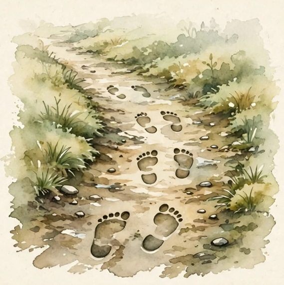
A stairway seen from above, only the first step lit, the rest in patient shadow.
When the whole staircase is visible, the workshop has noticed, the feet refuse. The full rehabilitation, the entire language, the book, the debt, the decade of repair — presented all at once, these are not plans but weather systems, and a person sensibly shelters from them. The doctrine of this room is therefore a narrowing: not the staircase, not the flight — the next smallest step, the one whose size has been honestly reduced until the foot agrees to it. The staircase in the workshop's own tower is climbed this way by the keeper every night, lamp in hand, and he is an old man who has never once been asked to fly.
Smallest is the operative word, and it is not a euphemism for small. The next step must be cut down until it fits inside the actual day, the actual energy, the actual grief or busyness on hand. Send the one message. Open the one document. Walk to the one corner. The register is unimpressed by steps announced at heroic scale and abandoned by Friday. It keeps its respect for the step that is still being taken in the third week because it cost so little to keep. Cutting the step down is not cheating; it is joinery. A step is sized to the leg that must climb it, and the leg, not the architect's pride, is the authority.
The staircase, meanwhile, has a property the anxious should know: it is climbed almost entirely in the dark, one lit step at a time, and it does not require you to see the landing to be making progress. The person you are becoming is up there somewhere, in the shadow, patient. One lit step, honestly taken, is a complete philosophy for a hard season. The landing will keep. It has kept for everyone who ever climbed honestly. The shadow, for its part, is patient too. Your only assignment is the step that is lit.
21Practice Is a Form of Becoming
The workshop draws a distinction the world keeps blurring: practice is not the waiting room before the real thing. Practice is a form of the real thing — the becoming itself, wearing its working clothes. The pianist at the scales is not postponing musicianship until the concert. She is being a musician in the tense that musicianship mostly lives in, which is the present, repeated. The register files practice under identity, not under preparation, and this small filing decision changes everything. Motivation, examined at the bench, turns out to be a fair-weather foreman; practice is the crew that works in all weathers.
Seen that way, the question shifts from when will I be able to, to what am I practicing today — because whatever it is, it is what is being built. Practice impatience and the draft thickens with impatience; the material does not check your intentions, only your repetitions. Practice the pause before answering, the scales of a trade, the forms of a kinder self-examination, and the draft obliges in the other direction. The bench is neutral. It builds what is brought to it, daily, without commentary. The main register is a sobering and consoling document: it cannot be flattered, and it cannot be fooled, and it improves exactly as fast as the repetitions do.
So the house counsels a tenderness toward practice that the ambitious rarely manage: it is not the toll before the bridge. It is the bridge, plank by plank, under your feet right now. The person you are becoming is not waiting at the end of the practicing years. There is a corollary the room insists on, in the keeper's smallest hand: if practice is becoming, then rest must be practiced too, or the draft will learn only the one season. The scales include silence. The musician who practices silence is not absent from the music. That person is the one who has been practicing — and is, by every record the keeper keeps, already well underway.
22Half-Built Bridges Carry Some Traffic
A bridge reaching halfway over slow water, a rowing boat meeting it at the end.
There is a stage of every bridge the engineers do not put on postcards: the span reaching halfway over the water, the cranes idle for the season, the far bank still unconnected. The workshop keeps a photograph of one above the desk, because it tells a truth the finished structures conceal. The half-built bridge is not useless. At its end, a boat ties up. Some traffic crosses — slower, smaller, but real. The crossing did not wait for completion to begin. The keeper chose the photograph himself, over the protests of a predecessor who preferred the bridge completed and gleaming, as all prefer their evidence.
Lives at mid-construction are routinely undervalued by the same error: the qualification half-finished counts, in the world's ledger, as no qualification; the recovery half-made, as no recovery; the language at halfway, as silence. The register counts them differently. Halfway across a real river is a location, and people live and trade there. The student nurse knows things. The almost-speaker can ask directions, and ask them well. Partial equipment, honestly used, outperforms the perfect equipment still imagined. The halfway must also be maintained — walked daily, tested plank by plank — or mid-construction decays into merely abandoned, which is the one condition this house refuses to honor.
Let the half-built span carry what it can, then, and without apology. Take the boat the rest of the way while the cranes rest. The traffic you move today — modest, improvised, real — is not a confession that the bridge is unfinished. The boat, for its part, keeps a schedule, and the schedule is the point: partial crossings, made regularly, have founded more fortunes and more fluencies than any single completed span announced in a single glorious year. It is the proof that the bridge is working — long before, the keeper notes, it is done.
23The Quiet Accumulation
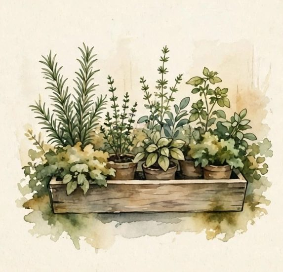
Jars on a cellar shelf, each labeled with a year, the level rising almost invisibly.
The estate's cellar keeps jars that fill by spoonfuls — a coin a day in the tin, a page a day in the drawer, a kindness a day in a household's memory. Nothing about the spoonful is dramatic, and that is precisely its protection: accumulation too quiet to be noticed is accumulation too quiet to be sabotaged by mood. The register prefers it to the grand gesture, which tends to be followed, as thunder is followed by clear skies and no rain, by a grand collapse. The tin on the dresser in the keeper's own room is dented from decades of exactly this arithmetic, and he would not trade it for a vault.
The mathematics are not mysterious, only unwelcome. Small deposits, made on ordinary days, at an interest no one can feel, arrive eventually at sums that look — to outsiders, and often to the depositor — like sudden fortune. The fluent speaker is discovered to have been carrying a phrasebook for six unglamorous years. The steady person is revealed as a thousand small steadinesses, compounded. Becoming is mostly this: arithmetic that has learned patience. Time's interest is paid to whoever stays in the account. It does not ask whether the depositor felt inspired at the moment of the spoonful; it asks only whether the spoon moved.
So the counsel of this room is to keep the spoon moving and the ledger out of sight. Do not audit the jar every morning; the level will insult you until, one day, it amazes you. Add the page, the coin, the kind sentence. Audit it in a year, if an audit is required, and bring the old photograph of the shelf for comparison. The register keeps those too. The person you are becoming is stored in the cellar, in labeled jars, rising almost invisibly — and almost invisibly, the keeper insists, is a perfectly respectable speed.
24A Version Worth Keeping
Amid all this talk of drafts and revisions, the workshop keeps one chair that is never sent back to the bench. It is not the newest chair, or the finest. It is the comfortable one, worn to a particular sitter, placed where the fire can be seen. The keeper points to it when visitors grow frantic with self-improvement: becoming is not the wholesale condemnation of the current version. Some of this draft is already a version worth keeping, and wisdom begins with knowing which parts. It has been reupholstered twice and repaired once, always in the same cloth, by a keeper who understood that some consistencies are achievements, not failures of imagination.
The relentless revision of everything is not humility; it is a quieter kind of arrogance, assuming the work is all wrong because it is unfinished. The register contradicts it from the evidence. The friend others trust with bad news. The hand that is good with broken things. The humor that has carried a household through three hard winters. These are not raw materials. They are finished sentences in an unfinished book, and the book is better for being edited around them. Reading as a friend is not the same as reading without judgment. It is judgment that has agreed to sit down, take off its coat, and look at the whole draft before speaking.
So take inventory, at the bench, with the keeper's pencil held steady: what in the present version is load-bearing and good? Mark it clearly. Protect it from the renovation. The inventory, honestly made, is a strange and steadying document: shorter than the list of defects every visitor expects to write, and more useful, because it tells the renovator where the house can bear weight. Start the renovation from the strong rooms. That is the whole method, and it is enough. Becoming does not ask you to vacate the whole house — only to keep building it, one room at a time, around the chair by the fire that has earned its place.
25Everyone You Meet Is a Draft of a Lesson
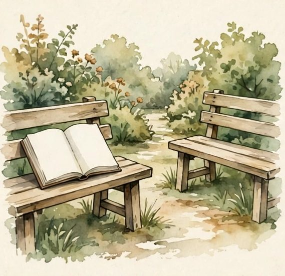
Travelers at a crossroads exchanging maps, each map unfinished in a different place.
The third hall of this house is hung with mirrors, but the keeper is quick to correct the metaphor: the other people are not mirrors exactly. They are drafts — working papers from neighboring workshops, each stuck at a different paragraph, each carrying one page that is further along than yours. The difficult manager has solved the problem of boundaries. The unbearable uncle has solved, completely, the problem of not minding opinion. Everyone you meet is a draft of a lesson, if the reader is humble enough to take dictation.
This is not the cheerful doctrine that everyone is secretly wonderful. The register contains lessons taught by wreckage as faithfully as lessons taught by grace: here is what a life looks like when the apology is postponed for thirty years; here is the cost of the grudge kept in good repair. The workshop reads both kinds of document with the same attention. A draft does not have to be admirable to be instructive. It has to be read. Watching to learn is a learnable posture, distinct from watching to rank, and the register notes that the students who master it early tend to need fewer unchosen teachers later.
So move through the world as through a library of working drafts, pencil in hand, annotating kindly. Take the page you need from each encounter and return the volume unharmed. The teachers rarely know they have taught. Keep the pencil sharp and the marginalia honest: what the page taught, what it cost the teacher, what of it is yours to carry. In ten years those notes will be a register of their own — proof that the faculty was everywhere, all along, and that you were, despite everything, enrolled. That, the keeper observes, is the usual arrangement — and the tuition, in this hall, is always already paid.
26The Teacher You Didn't Choose
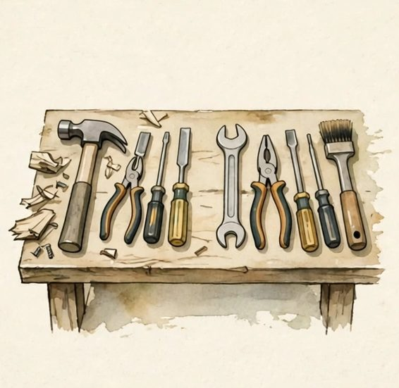
A stern portrait above a desk where the homework, nonetheless, got done.
Nobody's register shows a faculty chosen by ballot. The teachers who did the deepest work arrived unrequested: the illness that taught the value of an unremarkable afternoon, the failure that taught bookkeeping of the soul, the person whose departure taught what their presence had been subsidizing. The workshop does not celebrate these instructors. It does something more honest — it acknowledges their credentials, which were never in doubt, and records what was learned at their unwilling seminars. Their seminars are also, mercifully, self-limiting: an unchosen teacher whose lesson has been genuinely learned tends to be reassigned, and the syllabus moves on whether the student celebrates or not.
The resistance is natural and the keeper wastes no time shaming it. A lesson from an unchosen teacher feels like an insult added to the original injury; surely the curriculum could have been kinder. Perhaps. But the register notes that chosen teachers are often chosen precisely because they grade gently, and the unchosen ones, grading by reality, teach at the level reality actually examines. The degree from that faculty is not framed. It is simply carried, everywhere, for life. This is not consolation, and the house does not offer it as such. It is logistics: the examinations are already scheduled, and the only open question is whether the notes will be taken.
The mature move, this house teaches, is not gratitude performed on schedule. It is the refusal to waste the tuition. What did the hard season actually demonstrate — about limits, about loyalties, about the load-bearing walls of the self? Write it in the register, plainly, without decoration. The teacher you did not choose has already left the classroom. Under your own name, the lesson changes tense — from something that happened to you into something you know. The register regards that change of tense as the exact moment an injury finishes becoming an education. The notes, at least, should be yours.
27Borrowed Eyes
Some sights are not available to the eyes one was issued. The workshop keeps a drawer of borrowed spectacles for this reason: the friend who reads your manuscript and sees the structure you were too close to notice; the elder who looks at your catastrophe and perceives, calmly, a chapter; the child for whom your whole imposing life resolves into the single question of whether you are kind at breakfast. Borrowed eyes are not flattery and not surveillance. They are instruments, lent for the length of a look. The conversation that lends them is itself a small ceremony of trust, and like all ceremonies in this house it is short, plain, and binding on both parties.
To borrow eyes requires a specific humility the register watches for: the willingness to be seen at angles one cannot occupy. The back of one's own manner, the sound of one's own voice in a room, the gap between the draft intended and the draft received — none of these come into view without assistance. The person who never borrows eyes is revising a manuscript they have only ever read from inside the page. Disorientation, the keeper adds, is the tuition for the view, and it is charged once. After that, the borrower walks around their own draft like a house they finally have a plan of.
Ask, then, and lend in return; the drawer works in both directions. Take the borrowed look seriously without taking it as a sentence — it is a view, not a verdict, and the keeper files it beside your own. But take it. Borrowers who come back with reports become, in the register's patient arithmetic, lenders in their turn — the drawer is a circulating library, and its collection is nothing but other people's clarity, shelved and re-shelved across the years. Much of who you are becoming is visible first to other people, the way the far shore is visible first to the boat behind you.
28The Friend Who Tells the Truth
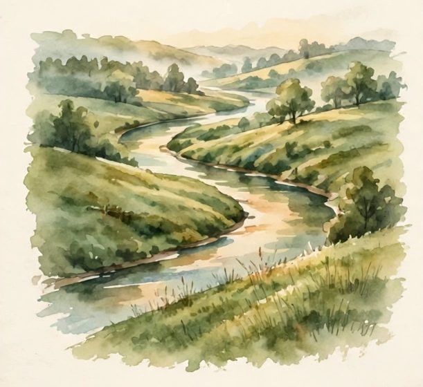
Two chairs angled toward each other, the tea gone cold because the talk was honest.
Every workshop needs one person licensed to walk in and say the unsayable sentence — that the celebrated plan is folly, that the new manner is a costume, that the draft's weak chapter is the one its author keeps rereading with pride. The friend who tells the truth holds this license, and the register lists them among the estate's principal assets, above several buildings. Flatterers are weather. This friend is climate: steady, unglamorous, and impossible to replace with sunshine. The license, the keeper notes, was not applied for. It accumulated, the way all authority in this house accumulates: by being right, in private, at some cost, more than once.
The license is not cruelty with a hall pass. The truth-telling friend is distinguished by two marks the keeper checks carefully: the truth arrives in private, never as performance, and it arrives accompanied by its evidence — the friend has watched, over years, and can show the pattern rather than merely announce the verdict. Above all, the friend stays. The sentence is delivered by someone who will be there next week, when it has done its work, which is how you know it was delivered in love. Care, in this room's definition, is not softness of message. It is permanence of presence.
Guard this friendship the way the shop guards its best tools, and oil it with reciprocity: be, for someone, the friend who tells the truth. Becoming is too long a project to undertake surrounded only by applause. And tell the truth about your own chair while you are at it: someone in your life is owed a sentence that would save them a year, and the register's margin, at this point in the hall, grows pointedly quiet. Somewhere in your life there should be a cold cup of tea and a sentence that saved you a year — and the chair, the keeper adds, should be comfortable.
29Envy, Read as a Map
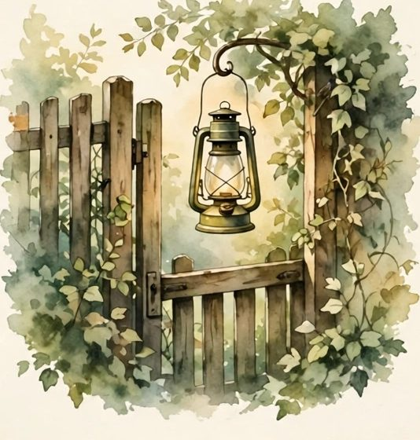
A map with one road inked in green, the traveler's own road still in pencil.
Envy is the least welcome guest in the workshop and, read correctly, one of the most informative. The keeper does not entertain the moral lecture; the register is interested in intelligence, not shame. Envy is a signal with an address on it. It points — rudely, precisely — at the thing some buried part of the self believes it was supposed to attempt. One rarely envies the concert pianist's discipline or the heir's inheritance. One envies the specific door one has been walking past for years. It also arrives unscheduled, usually in the presence of the envied person's good news, which is how the workshop knows the signal is live and not theoretical.
Read as an accusation, envy curdles: it becomes gossip, sabotage, the small cold pleasure in another's stumble. Read as a map, it clarifies: the envied life is a survey of your own unclaimed territory, drawn by a surveyor who does not care about your feelings. The map is not the territory's price list, and it does not show the costs — the envy is famously silent about the envied person's Tuesdays. But as a direction of travel, it is rarely wrong about the continent. The costs are real, and someday they must be counted — but they are counted at the border, not at the moment of first sighting, when the whole expedition is still possible.
So when envy visits, do the clerk's work: write down what, exactly, is envied — the craft, the freedom, the nerve, the audience — and strike the person's name from the record. What remains is a commission from your own workshop, misdelivered as a wound. Follow the map a few honest steps. A few honest steps, the register finds, are usually enough to change the entry's category in the ledger — from grievance, where it was compounding quietly, to instruction, where it can finally be spent. Envy that is obeyed as instruction loses its sting; it becomes, the register notes, simply ambition that has stopped apologizing.
30The People Ahead of You on the Path
On any path worth walking, there are footprints ahead of yours, and the workshop counts this among the path's mercies. The people ahead have done the reconnaissance you could not do from the valley: they know where the bridge is out, which season turns the ford dangerous, how long the climb actually takes as opposed to how long the guidebook claims. Their existence is not a reproach to the person behind. It is the reason the person behind can travel lighter. Retired tools are the most eloquent of these: a stranger's grip wore that handle smooth, and the smoothness is a sentence of instruction in itself.
It is possible to spoil this gift, and the register names the method: stand in their footprints and compare depths. Comparison of that kind is bookkeeping without a ledger — it produces numbers and no knowledge. The keeper suggests a different use of the ahead. Ask them, when courtesy permits, the two questions that matter: what do you wish you had known at my marker, and what are you still drafting, up there? The second answer is the treasure. The people ahead are unfinished too, gloriously, which means the path has no finish line where the finished wait.
Walk, then, in gratitude and in order. Send word back down the path when you can; someday the footprints will be yours, and some frightened beginner will read them the way you once read the prints in the snow. Told plainly and without embroidery — embroidery being the first symptom of a lesson turning into a legend — the word sent down the path has carried more beginners over the bad ford than any map the office ever printed. The relay works because its runners are not heroes. They are only people who remember being behind. The path is a relay, not a race — and nobody, the keeper writes in the margin, is keeping the time.
The Workshop Desk
One desk receives all correspondence for this house — questions, corrections, greetings, and drafts you are working on. It is read in the order it arrives.
31Rivals as Unwilling Mirrors
Two fencers in a practice room, each correcting the other's stance by existing.
The rival is the mirror nobody commissions and everybody receives. They work your territory, want your prize, and — the detail the workshop finds instructive — they flourish or falter by methods you are obliged to study. A rival's excellence is an audit delivered free of charge: it shows exactly which of your weaknesses the world can see, because the rival is being rewarded for standing precisely where your weakness left a vacancy. The register files rivals under faculty, unwilling division. An audit, the keeper observes, is only frightening to an operation that has been avoiding its own books; the workshop keeps its books open precisely so that audits lose their terror.
None of this requires liking them, and the keeper is not so unrealistic as to require warm feelings toward the person dismantling your position. It requires only the discipline of the fencing room: watch the opponent's footwork more than your grievance. What did their last success assume about the audience that yours did not? Which habit of theirs — the earlier rising, the plainer speaking, the refusal to discount — is a sentence your own draft has been avoiding? Habits are the one part of a rival's operation that cannot be patented, copyrighted, or kept from an attentive student. The register considers this the free university of the competitive world.
Handled this way, rivalry becomes a strenuous form of tuition, and sometimes, given decades, something even stranger: respect, and occasionally a friendship conducted at long range between two people who made each other better by refusing to be ignored. The mirror was unwilling. The reflection, the keeper notes with satisfaction, was accurate anyway. There is a final entry the keeper sometimes adds, in the margin of a long rivalry, when the decades have done their work: the two drafts, read side by side, turn out to have been correcting the same manuscript. Becoming uses the instruments it is given — including the sharp ones.
32What Children Teach Without Trying
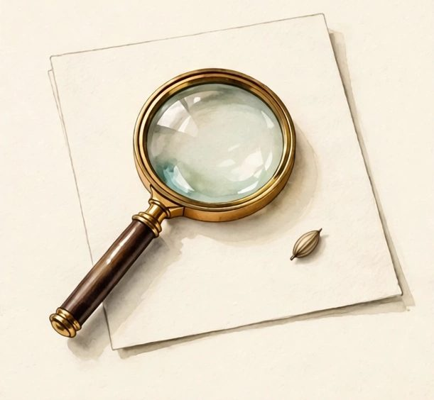
A small stool beside the tall workbench, a beginner's tools laid out in earnest.
The smallest teachers in the workshop hold no qualifications and conduct no lessons, which is why their instruction lands. A child learning anything at all demonstrates, without commentary, the factory settings of becoming: attempt, topple, regard the result with scientific interest, attempt again before the tears have finished drying. Nobody has yet taught the child that the topple is a verdict on the self. The child files it under information and proceeds — and the adults at the bench, watching, feel something ancient stir under their accumulated caution. The tears, notably, do not interrupt the curriculum. They are part of the timetable, and nobody in the nursery mistakes them for failure.
Children also teach by interrogation. Their questions arrive without the adult varnish of embarrassment, and they locate, with unerring instinct, the load-bearing hypocrisies: why the rule applies to them and not to the rule-maker, why the thing feared is done daily anyway, why the grown person says the dream matters and then visits it never. The register does not suggest children are sages. It observes that they are unedited, and that an unedited reader is exactly what most drafts require. Varnish is the register's word for every adult coating that exists to prevent questions, and the house keeps very little of it in stock.
So the house keeps the small stool by the tall bench on purpose, and the keeper recommends the posture it teaches: beginner's mind, worn without shame at any age. The person you are becoming will need to learn entirely new things in full view of others. A child could show you how. Low, because beginners fall shorter distances; honest, because the stool does not pretend to be a throne; and in the best company in the building, because the child has not yet learned to call the lesson anything but play — which is the oldest name the workshop knows for becoming at its most efficient. A child, asked, already has.
33The Stranger's Summary
Once in a while a stranger — met on a train, seated beside you at the one dinner, gone by morning — delivers a summary of you so compressed and accurate that it rings for years. They had no history to consult, no stake in your preferred version, no years of accumulated story to protect. They read the single page in front of them and reported what it said. The workshop keeps a drawer for these summaries, because they are data of a kind no friend, however honest, can supply: the view from outside the whole archive.
The summary is not always welcome, and it is not always right; the register is careful on both points. A stranger reads the weather of one evening and may mistake it for the climate. But when the stranger's sentence rhymes with things your truthsayers have murmured and your rivals have exploited, the keeper advises attention. Three sightings make a position. The person you are becoming may be visible in outline to passersby long before the household admits the shape. A bearing, like a sentence, can be checked: the keeper keeps a compass by the drawer, and the rule is that no single sighting is ever plotted as fact.
There is a gentler corollary the house adds for the road: you are, daily, the stranger in other people's stories, issuing summaries you will never hear reviewed. Let yours be merciful in the margin. And somewhere tonight the opposite transaction is also completing itself: a stranger is deciding, on the evidence of one shared hour, that you are further along than you believe — and that sentence, too, will be kept in a drawer, and will work on its keeper in the dark, in your favor. Somewhere, a sentence you forgot by supper is being kept in a stranger's drawer — and it is part, the keeper writes, of who they are becoming.
34Books as Slow Teachers
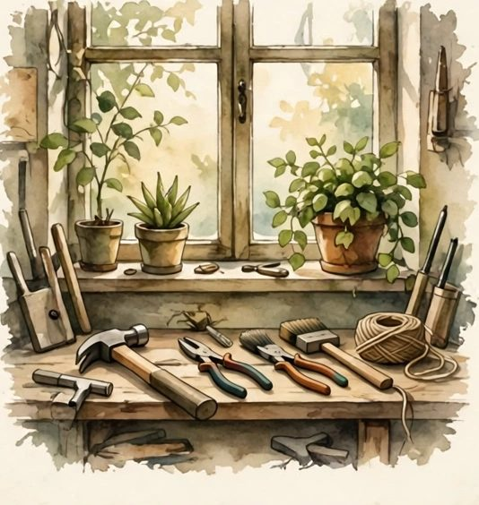
A book left open face-down on the arm of a chair, its lesson mid-sentence.
Among the faculty of this hall, the books are the slowest teachers and the most patient. A book does not adjust its pace to your readiness; it waits on the shelf in the same words for a decade, until the reader who returns to it is a different draft — and then, miraculously, it is a different book. The workshop regards this as the deepest known property of texts: they teach at the speed of the student, and their syllabus is finished only when the student is, which is to say never.
The slowness is the method. A friendship instructs in conversations; a book instructs in a voice that can be paused, reread at the sentence that stung, argued with in the margin at midnight. Over years, the margin arguments become a record of becoming as reliable as any register: here is where the young reader disagreed with the dead author; here, in a later hand, is where the older reader quietly conceded the point. The book held still. The draft moved. That is the whole diagram. The older reader's concession, written small, is among the most hopeful sights in the building's whole collection of marginalia.
Keep, then, a few slow teachers in permanent session and return to them as to old workshops where you once apprenticed. Do not only consume new voices; revisit the ones that built your early benches. Lessons are also owed in the other direction, now and then: the old book must be introduced to the new reader you have become, and the introduction, done honestly, is a small ceremony of gratitude the house never skips. The person you are becoming needs old measurements as well as new ones — and no teacher, the keeper notes, has ever charged extra for the years between lessons.
35When the Mirror Disagrees
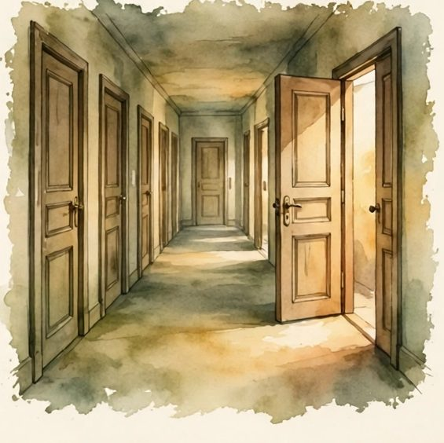
Two mirrors on facing walls, the reflection going back farther than the eye follows.
Sooner or later every draft meets the mirror that disagrees: the review that finds the celebrated chapter hollow, the friend gone quiet, the mirror in the literal glass announcing a season the inner portrait had not scheduled. The instinct is to shop for a kinder mirror, and the market obliges. The workshop's counsel is sterner and kinder at once: before replacing the glass, check whether the disagreement is information. A mirror that always agrees is not a mirror. It is a portrait that has learned to nod. The nodding portrait hangs in every house, usually in the room where visitors are received, and it has ended more drafts than any critic.
Disagreement has grades, and the register sorts them without panic. Some is weather — a critic's taste, a stranger's mood, a photograph taken in cruel light — and is filed accordingly. Some is climate: the same note returned by the truthsayer, the rival, the stranger, and now the glass. Climate is not to be argued with; it is to be dressed for. The draft that can hear climate without collapsing into either defiance or despair is a draft approaching maturity, which the house defines as responsiveness without surrender. Dressing for climate also includes knowing when the season turns — the note that was climate at thirty may be weather at fifty, and the wardrobe must be revisited.
Hold both images a moment, then: yours, and the one the world keeps returning. The person you are becoming lives somewhere in the negotiation between them — neither the vanity's cut nor the mirror's harshest edit, but a third draft, truer than either. That negotiation, conducted honestly over years, is not a crisis of identity. Conducted honestly, the negotiation produces the only self-portrait the workshop is willing to frame: not the kindest version, not the harshest, but the one with the most evidence behind it — the draft its author can finally sign without crossing their fingers. It is the identity, at work.
36Gratitude to the Draftsmen
The corridor of this hall is hung with sketches of the same sitter by different hands, and the exercise at the end of the hall is to read the wall without resentment. No person is self-authored. The line of the jaw was drawn by a grandmother's discipline; the stance by a coach who believed an improbable amount; one whole chapter was drafted by an enemy, whose opposition taught the subject where the walls were. The register calls these contributors the draftsmen, and its doctrine is gratitude — not as politeness, but as accurate bookkeeping.
Gratitude to the draftsmen does not require approval of every line. Some drew carelessly; some drew in anger; one or two drew what they needed you to be rather than what you were. The house is clear-eyed about this, and still insists on the ledger's completeness: even the distorted sketches taught the sitter where correction was needed, and the corrections are now among the strongest passages in the draft. To curse the early draftsmen is to curse the provenance of one's own best paragraphs. Settled upward means this: the thanks go to the living first, while they can still be embarrassed by them, and to the dead in writing, where they keep.
So close the hall as the keeper closes it, at the wall, with thanks itemized like a craftsman settling accounts: to the kind, for the courage; to the careless, for the warning; to the departed, whose pencils are down, for whatever of theirs still works in the hand. The person you are becoming is a collaboration across decades and graves. Acknowledged, the collaboration does not diminish the author. It explains the author, which is a rarer and more useful thing — and it frees the next chapter from having to pretend it was written alone. Say so, in the register, while there is time.
37You Become What You Repeat
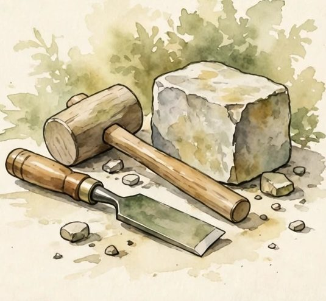
A mason's course of bricks, each row the same motion made level by habit.
The fourth hall opens with the plainest doctrine in the building, lettered over the door where no visitor can miss it: you become what you repeat. Not what you intend, announce, or resolve in the heat of a significant date — those are memoranda, and the register files them separately, in the drawer of good intentions. What you repeat is the draft's actual text: the small action done on ordinary days until it stops being an action and starts being a description. The drawer of good intentions is, the keeper insists, the saddest furniture in the building — not because its contents are false, but because so many of them were true.
The doctrine cuts both ways, and the keeper insists on both edges. Repeated courage, in teaspoon doses, becomes a brave person's ordinary Tuesday. Repeated evasion, likewise dosed, becomes a character the evader will sincerely disown while continuing to author it. The workshop is not a court; it does not ask why the repetition began. It asks only that the visitor understand the mechanism, because a mechanism understood is a mechanism that can be aimed. Aimed deliberately, the mechanism has a further kindness: it starts with whatever it is given today, however small, and it does not backdate its judgments to the years when it was aimed by accident.
So the audit of this hall is simple enough to fit on the register's smallest card: what did you do today that you also did yesterday, and the day before that? There, in that unglamorous list, the person you are becoming is already printed in draft. Change the list — one line, kindly, sustainably — and the doctrine that sounded like a warning reveals its other face. The register has turned whole lives on less — on one kept walk, one unanswered provocation, one page a day — and it has never once turned one on an intention, however magnificent, that stayed in the drawer. It was a promise of method, all along.
38The Chisel Works Daily
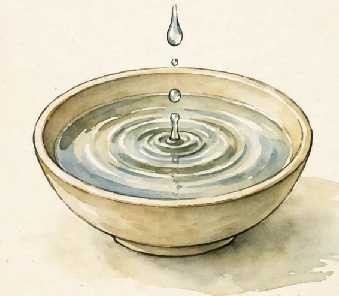
A sculptor's bench at rest, the stone smoother on the side facing the door.
Visitors to the sculptor's room expect the drama of the mallet; they find instead a bench, a stone, and evidence of patience on an almost geological scale. The chisel that matters works daily and removes, on any given day, an amount of stone no audience would applaud. Yet the register's photographs, taken years apart, do not lie: the form emerges. Not at the speed of the striking — at the speed of the returning. The daily chip is the unit of transformation the workshop trusts above all others. The apprentice is given a broom before a chisel, and the broom, the keeper says, is the first lesson in disguise.
There is mercy in this arithmetic for anyone who has despaired of the overnight change. The overnight change, examined at the bench, is usually a story told backward: the world notices the statue on the day the last chip falls, and invents a suddenness that the stone, could it speak, would correct. Years of Tuesdays did the work. The chisel simply consented to be daily, which sounds modest and is in fact the rarest discipline in the building — rarer than talent, the keeper notes, and not closely related to it.
Take up, then, the unglamorous instrument sized to your actual hand. Chip the stone that is in front of you, a little, today; return tomorrow and chip it again. Becoming does not require you to believe in the statue. Commentary is not forbidden in the room; it is simply understood to be what the worker does with the mouth while the hands do the becoming — and the register, which records only the hands, remains unimpressed by eloquence. It requires only that you keep the appointment with the stone — and the stone, in its slow way, keeps faith with those who do.
39Habits Are Votes
On the workshop table stands a ballot box of plain tin, and the keeper drops a slip into it as the day ends — sometimes two, sometimes none. The doctrine of this room is that habits are votes: each small repeated act is a ballot cast for a kind of person, and the election, unlike the world's, is never called, never finished, and counts every slip exactly once. The early walk votes. The postponed letter votes. The sentence softened before sending votes. Nobody's franchise is suspended; the only way not to vote is not available.
The metaphor earns its keep in its arithmetic. A single vote decides nothing and is therefore beneath despair — nobody's becoming was ruined by one ballot, though many fear so on the evidence of one bad evening. Equally, no landslide is required. A narrow, persistent majority of small slips, cast on ordinary days by a voter who is often tired, eventually governs the whole country of a life. The register has seen it too many times to call it a metaphor at all. It is simply how the counting works.
So vote deliberately, in the small denominations the day accepts, and do not wait for a grand election that is never scheduled. One ballot, rightly chosen, has a property the statisticians of the soul underrate: it changes the voter. The person who has voted once for the braver draft walks to the box the next morning as a slightly different elector — and the box, patient tin democrat that it is, accepts the new franchise without a single form. The person you are becoming is, at this moment, the leading candidate produced by your habits — and the polls, the keeper is pleased to report, are open every day, including this one.
40The Atmosphere of a Day
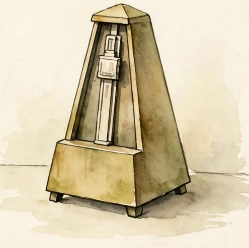
The workshop windows open, weather moving through the room where the work waits.
Ask what a plant needs and the gardener names soil and light; ask the keeper what a draft needs and he names, first of all, weather. The atmosphere of a day — the order or rubble on the bench, the voices the room admits, the feed of news and grievance taken with breakfast, the hour at which the light is allowed in — is not decoration around the work of becoming. It is the medium the work grows in, as silently decisive as climate over a vineyard. Climate is also inherited, some of it, and chosen, some of it, and the register's fairness consists in never confusing the two ledgers.
Habits do not float in a vacuum; they breathe the day's air. The intention to practice drowns quietly in a room arranged for interruption, and flourishes, almost without willpower, in a room arranged for it — the instrument out of its case, the book face-up on the chair, the shoes by the door making their small daily argument. The workshop's carpenters understand what moralists forget: carpentry of environment beats exhortation, because the atmosphere votes every hour, on the voter's behalf, without asking. Suggestions are the atmosphere's handwriting, and a wise keeper edits the handwriting rather than lecturing the reader.
So tend the weather you can tend. Clear the bench the night before; choose the room's first voice with care; let the day's air carry more of what the draft needs and less of what it survives. Nobody commands the climate entire — the register is not naive — but a window opened is a window opened. The window is a modest instrument — no storms are cancelled by it — but in the register of this hall, small honest weather, admitted daily, has grown more drafts than any revolution of climate. The person you are becoming is growing in this atmosphere, today, either way.
41One Pebble in the Jar
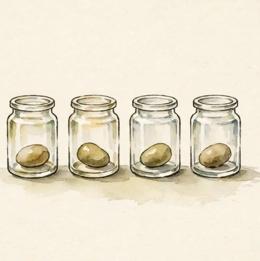
A glass jar on the bench, one smooth pebble settling at the bottom.
The workshop keeps a jar by the door, and the rule of the jar is simple: one pebble a day, no more is demanded. A page read, a drawer tidied, a sentence written before the kettle boils — each is a pebble, unglamorous and round. Visitors laugh at the slowness of it, the way people laugh at most honest accounting. But the keeper does not defend the jar. The jar defends itself, slowly, the way a shoreline defends the sea. Smallness is not the opposite of ambition here. It is the only form of ambition that survives contact with ordinary days, tired evenings, and the long, unphotogenic middle of every real change.
The arithmetic is almost rude in its plainness. One pebble weighs nothing; three hundred and sixty-five pebbles have a heft that startles the hand. The person who waits for the large gesture waits for weather that may not come this year, while the pebble-carrier has quietly changed the landscape of the room. Nothing about the method flatters the ego, which is perhaps its deepest recommendation. There is no audience at the jar. There is only the soft sound of stone on stone, the register of a life being added to, one unremarkable unit at a time, without announcement and without debt.
So the house advises its apprentices to distrust the grand beginning and trust the pebble instead. Beginnings that require courage fail on the days courage is elsewhere; the pebble requires only a hand. Pick the smallest true unit of the person you are becoming — the sentence, the lap, the kind word practised like a scale — and let it fall. The jar will not applaud. The jar will simply fill, which is better than applause, because applause ends. A full jar, emptied at the year's turning, makes a sound worth hearing: the sound of a person who was, all along, under construction and on schedule.
42Systems Over Ceremonies
Every workshop has known the ceremony: the great clean-out in January, the vow spoken aloud, the new system of shelves built in a weekend of virtue. By March the shelves hold the old disorder in a newer arrangement. The keeper of this house has stopped believing in ceremonies, not from cynicism but from record-keeping. The register shows what actually changes a room: not the purge but the hook by the door, not the vow but the place where the broom always stands. A ceremony is an event; a system is a climate. Events pass through a life like weather through a valley. Climates are what the valley becomes.
A system, in the workshop's plain sense, is anything that helps the tired self do what the rested self intended. The letter tray where the paper must land. The shoes by the door that make the walk the default. The page left open on the desk at night, so the morning begins in the middle of a sentence rather than at the cliff of a blank one. None of these are inspiring. All of them are load-bearing. The house has noticed that people under construction do not lack inspiration; they lack scaffolding — small, stupid, reliable structures that hold the work up on the days the worker cannot.
So build systems and let ceremonies be parties. Set the jar where the hand passes. Put the book where the chair is. Let the environment do the remembering that willpower keeps volunteering for and failing at. A good system is nearly invisible, the way a good hinge is; it asks nothing and carries everything. Years later, when someone asks how the person was remade, the answer will sound disappointing and be entirely true: the hooks were in the right places, the tools went home at night, and the door of the workshop, once a day, simply opened.
43The Path Worn in Grass
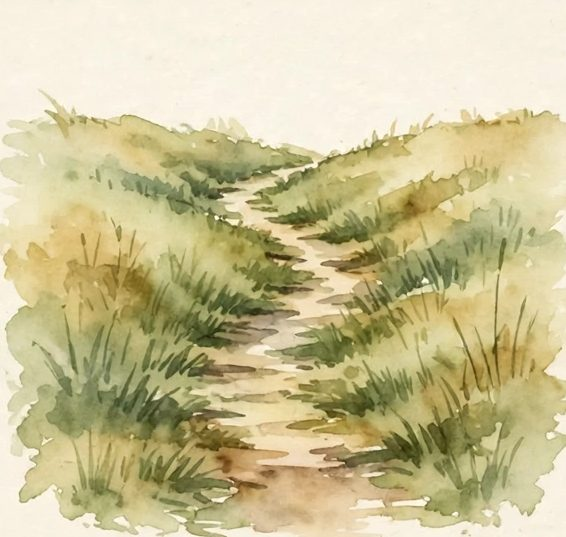
A pale line crossing the green, where feet have chosen the same way home.
No committee designs the path in the grass. It appears where feet actually go, worn pale by a thousand ordinary crossings, and it is the most honest map a household owns. The paved walk, laid by intention, may curve in a handsome arc to the gate; the grass path cuts the corner, diagonal and unembarrassed, recording not where people should walk but where they do. The workshop teaches its apprentices to read these paths before judging them. A habit is exactly this: a route the feet have voted for, daily, until the ground itself remembers. Character, the keeper says, is mostly grass — it grows where the walking happens.
This is why scolding a bad path rarely reroutes it. The feet are not wicked; they are efficient, and they will take the worn way home in the dark, in the rain, in the year of sorrow, without consulting the paved intentions. To change the path, the house does not lecture the grass. It moves the gate. It plants the hedge where the shortcut was ruining the flowerbed and opens a better desire-line with gravel and welcome. Every teacher of habits eventually learns this humility: you do not fight a path, you offer the feet a kinder one and let repetition — that patient groundskeeper — do the wearing.
And there is mercy in the metaphor, for those who read their own grass and find the pale lines unflattering. A path is evidence of travel, not of failure. It proves the feet kept moving toward something — rest, relief, the quick comfort, the door that opened. Even the paths we regret were worn by a person trying, in the only grammar they had, to get somewhere. The work is not to hate the old line in the grass. The work is to start walking the new one, today, in ordinary shoes, until the ground — faithful as ever — begins to remember differently.
44Time, the Silent Partner
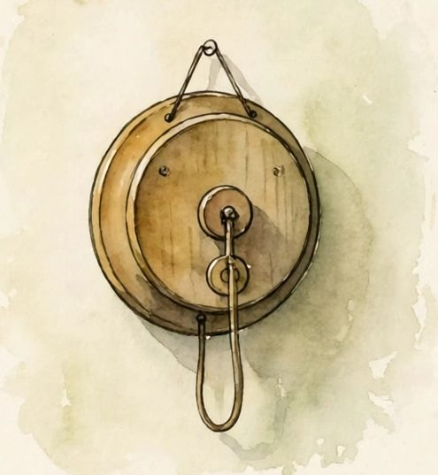
Two chairs at the bench; one is always occupied, though no one sits down.
Every enterprise in the workshop has a partner who never signs the register and never misses a day. Time does not advise, applaud, or hurry. Time simply shows up, in all weathers, and does the one thing nobody else can do: it lets small actions compound. A habit is a deposit; time is the interest. The apprentices who understand this stop asking whether a practice works and start asking whether it will still be standing in a year, because that is the only courtroom where the verdict is read. The chisel looks unimpressive at noon. The statue is what noon looks like, ten thousand times.
The silent partner is not sentimental, and the house does not pretend otherwise. Time compounds everything, including neglect; the unwalked path grows over as faithfully as the walked one wears in. This is not a threat but a symmetry, and there is steadiness in it. Whatever is repeated will be amplified — the page a day, the grievance a day, the small kindness, the small contempt. The partner asks only one question, and asks it without words, by arriving tomorrow exactly as expected: what, precisely, shall we multiply? A person under construction could do worse than answer that question deliberately, once, and then let the calendar carry the answer.
So the workshop keeps its clocks unhurried and its expectations long. Nothing in the building is promised by Friday. Instead, the keeper speaks a plainer blessing over new apprentices: may you still be doing this when it stops being interesting, for that is when it starts being true. Time rewards the ones who remain in the room — not the brilliant visitors, not the ceremonial founders, but the ordinary practitioners who stack their quiet days like bricks. In the end the partner signs nothing. The building signs for him, and the building, if you have kept faith with the days, is the signature.
45What You Do Tired Still Counts
The register keeps two columns for every apprentice: what was done in strength, and what was done tired. The second column is shorter, plainer, and — the keeper insists — the truer biography. Anyone can work on the morning of good sleep and great resolve; that work testifies mostly to the weather. But the paragraph written at the ragged end of the day, the walk taken in the drizzle of a depleted spirit, the kind reply sent when kindness felt like lifting furniture — these are written in a different ink. They prove the practice has moved from the emotions into the structure, where it can be trusted.
The house therefore keeps a tired version of every discipline, designed in advance by the rested self, like a lifeboat stocked in fair weather. The full practice is an hour; the tired practice is ten minutes and no shame attached. The full practice is the chapter; the tired practice is the page, the paragraph, the single honest sentence. What matters is that the thread is not dropped — that the tired self, arriving at the bench, finds the work scaled to the strength actually present. A practice that only fits your best days is a costume. A practice that fits your worst is a spine.
Let it be recorded, then, against the perfectionists: the tired repetitions count. They count double, if the keeper is honest, because they carry the whole weight of the enterprise on the days it would be easiest to set it down. The jar does not ask how the pebble felt on its way in. The path in the grass deepens under tired feet exactly as under eager ones. So do the small thing at the small scale, badly if necessary, slowly if necessary, and write it in the register without apology. The person you are becoming is being built, in no small part, by the person you were when building was hard.
The Workshop Desk
One desk receives all correspondence for this house — questions, corrections, greetings, and drafts you are working on. It is read in the order it arrives.
46The Broom and the Corner
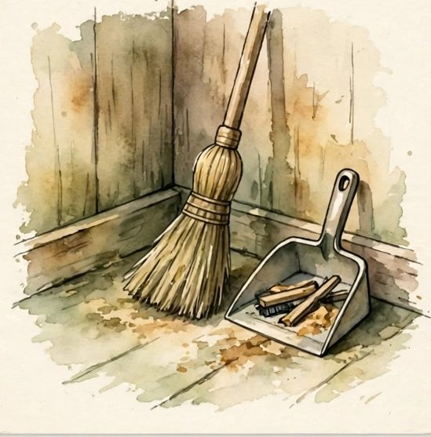
A broom resting in the corner it has just swept, the dust gathered in one honest pile.
Every workshop has a corner that collects what nobody wants to look at: the offcuts too small to use, the letters unanswered, the task that has been next since spring. The keeper's rule is unfashionable and absolute — the corner is the curriculum. The broom stands there not as punishment but as invitation, because a person under construction is best known by how they treat the unswept part of the room. Grand projects announce who we wish to be. The corner announces who is currently in charge, and it never lies, and its testimony is mercifully small: a pile, a decision, an afternoon.
The wisdom of the broom is that it works at the scale of the actual. It does not reorganize the whole room in a spasm of shame; it takes one corner, one pile, and makes it true. Most neglected things in a life are not neglected because they are hard. They are neglected because they are entangled — each item in the corner is tied to a small grief, a small fear, a small debt of attention. The broom untangles nothing. It simply gathers, sorts, and lets the hands discover that the pile, approached at broom-scale, is mostly dust and two real tasks. The monster was a shadow cast by accumulation.
So the house sweeps in rotation, the way orchards are pruned — a corner a week, without drama, without a ceremony of total renewal. The apprentice who learns this stops waiting to become a different person before tidying the actual one. Sweep the corner you have. Answer the letter that exists. Mend the seam that is torn, not the wardrobe of the imagined self. There is a dignity in the broom that the spotlight never learns: it goes where the work is, quietly, and leaves the floor fit for dancing. The person you are becoming will be built, more than you expect, out of swept corners.
47Rituals for People Under Construction
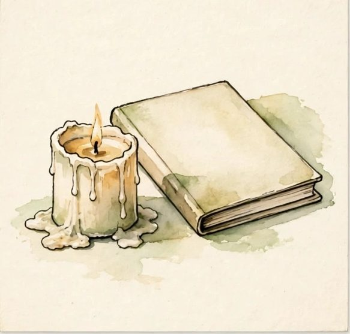
A candle, a notebook, a cup set down in the same place as yesterday.
A ritual, in the workshop's usage, is a habit that has been given a chair and a name. It is smaller than a ceremony and larger than a routine: the cup set down in the same place, the notebook opened to the same hour, the walk that begins when the lamp is lit. People under construction need these small anchors more than most, because their inner architecture is, by definition, partly scaffold. When much is changing, something must conspicuously not change — a keel of sameness under the refit — or the person wakes each morning in a house with no fixed address and spends the day's strength merely relocating themselves.
The house is unromantic about how rituals are made. They are not discovered in a flash of meaning; they are worn in, like the path in the grass, and meaning arrives later like a tenant who finds the rooms already warm. Light the candle because it is six o'clock, not because the soul requests it. Write the three lines whether or not they are true yet; some mornings they will be true by the third line. The ritual's power is precisely that it does not consult the feelings. It is a small treaty between the days: this, at least, we do — and the treaty holds the border while the interior negotiates its revolutions.
Choose rituals the size of your real life, then, not the size of your aspirations. A ritual you must recover from is a debt; a ritual you can keep in a hospital corridor, in a strange city, in the worst week of the year — that is a tool. Morning light on the face. The bench cleared at night. One sentence in the register before sleep, recording not triumph but weather. Kept faithfully, these small observances become the load-bearing walls of the self under construction. Long after the scaffolding comes down, visitors will admire the building. The keeper will know it was held up, all along, by the candle and the cup.
48The Workshop at Closing Time
There is an hour the visitors never see, and it may be the most instructive hour of the day: closing time, when the tools are wiped and hung, the offcuts swept into their bin, the unfinished piece covered with a cloth against the dust. The workshop at closing time is the doctrine of the house made visible. Work that will be resumed is not abandoned; it is put to bed. The cloth over the unfinished piece is a promise written in cotton — not that the piece is good, not that it will succeed, but simply that someone will return to it tomorrow, and it will be found as it was left.
Apprentices resist this hour, because it feels like the opposite of progress. Everything in them wants one more cut, one more paragraph, one more push against the grain of the day. The keeper is firm. Tired hands ruin good material, and tired judgments misread the work: pieces condemned at midnight are often forgiven by morning, and pieces praised at midnight are sometimes quietly embarrassing by nine. The closing ritual is how the workshop protects tomorrow from tonight. It separates the work into what is done, what is waiting, and what is merely loud — a sorting no tired person should be trusted to skip.
So learn the closing time of your own workshop, and keep it like a Sabbath in miniature. Wipe the tools. Write the one line in the register. Cover the unfinished self with something gentle and go to bed before you start revising your whole life. The person you are becoming is not built in the heroic overtime; they are built across hundreds of ordinary days, each one ended on purpose. The last sound in the building is the keeper's, and it is not a fanfare. It is the small, sufficient click of the lamp going out over work that knows it will be continued.
49The Crack Is Where the Light Learns
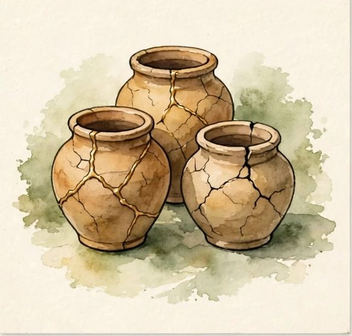
A clay bowl, mended with a seam of gold, holding the light differently now.
The workshop does not hide its mended bowls. They stand on the open shelf, seams showing, and the keeper will tell you — if you ask, and apprentices always ask — that the crack was not the end of the bowl's education but the beginning of it. Before the break, the bowl knew only how to hold. After it, the bowl learned how light behaves: where it enters, where it pools, how a vessel with a history throws a more interesting shadow than a vessel without one. This is not a celebration of breaking. It is a refusal to waste what breaking teaches, which is a different and sterner thing.
People under construction arrive here carrying failures they treat as verdicts, and the house must gently reclassify them as information. The failed attempt is a lamp aimed at the work from an angle success never visits. It shows the weak joint, the false assumption, the place where the material was asked to be something it is not. The crack, read honestly, is a map of the real. The keeper keeps a saying over the mending bench: do not ask the bowl why it broke; ask what it can now hold that it could not hold before. Some vessels are only made capacious by having been, once, in pieces.
None of this obliges anyone to be grateful for the fall, and the house does not traffic in that kind of cheerfulness. The mending is slow, the gold is expensive, and some bowls are set aside for a season before anyone can bear to repair them. But the shelf exists, and it fills, year by year, with work that has survived its own worst day. When the newest apprentice whispers that their failure feels final, the keeper does not argue. He simply sets a mended bowl on the bench between them, fills it, and lets the light — which learned its way in through the crack — make the argument.
50Failed Drafts, Kept
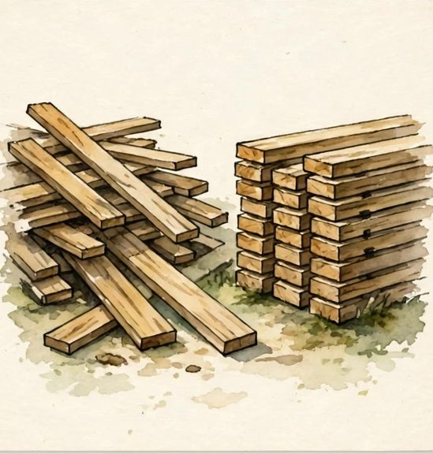
A shelf of crossed-out pages, tied with string, kept like letters from an earlier self.
In the corner of the workshop stands a shelf that puzzles every visitor: the failed drafts, kept. Not the promising ones — those live by the desk — but the abandoned chapters, the botched joints, the versions that went wrong in the first paragraph and wronger in the fifth. A tidy soul would burn them. The house files them, ties them with string, and writes the date on the spine, because the keeper knows what apprentices learn late: the failed draft is the only honest portrait of the person you used to be, drawn by their own hand, at full effort, without flattery. Burn it, and you lose the evidence of the distance traveled.
The drafts earn their shelf in a second way: they are a savings bank. The scene that failed in this year's story is the load-bearing wall of a better one five years hence; the joint that split under the apprentice's mallet teaches the angle the journeyman will need. Nothing made at full attention is ever fully wasted — it goes into the keeper's stores as seasoned material, mislabeled by discouragement as rubbish. Many a master's finest piece, examined closely, is a failed draft that finally found its true size. The house has a phrase for this: nothing in the bin is finished being useful.
So keep your failures the way a good workshop keeps its offcuts — sorted, dated, and out of the daily sight but within reach. Do not read them on the bad days; that is not what they are for. They are for the far day when the work stalls and the voice arrives saying you have never made anything, at which point the shelf testifies otherwise: here is volume upon volume of making, most of it imperfect, all of it proof of a person who kept showing up to the bench. The drafts are not your shame, apprentice. They are your archive, and an archive is what separates a life from a rumor.
51Compost, Not Garbage
Out behind the workshop there are two containers, and the whole philosophy of the house could be reconstructed from the difference between them. One is the bin, for what is truly finished: the rag soaked in solvent, the lie told once too often, the arrangement that poisons everything it touches. The other is the compost heap, for what has failed but is not finished — the collapsed plan, the ended friendship's lessons, the year that produced nothing visible. Garbage is disposed of. Compost is kept, turned, and waited on, because the keeper knows that some materials only become fertile by first being allowed to fall apart completely.
The apprentices' great error is to use one container for everything. In the first heat of failure, whole seasons get thrown on the rubbish pile that belonged in the heap: the skill half-learned, the contact half-kept, the insight buried in an embarrassing afternoon. The house teaches a slower sorting. Let the failed thing cool. Then ask of each piece the compost question — not was it good, but can it feed anything? Almost everything honest can. The failed business feeds judgment. The failed performance feeds humility of the useful, load-bearing kind. Even grief, given years in the heap, turns into a soil in which other people's grief can be planted and understood.
Compost also teaches the timeline, for it cannot be hurried and it cannot be faked. Nothing in the heap becomes soil by Friday; the turning takes seasons, and the person doing the turning must accept that today's work will feed a garden they may not sit in for years. That acceptance is the very shape of becoming. So sort carefully, apprentice. Throw away what is truly poison, without ceremony. But let the rest of your failures lie in the warm dark and break down into usefulness. A life with a good compost heap never really starts from nothing again — it starts from soil.
52The Page Taped Back Together
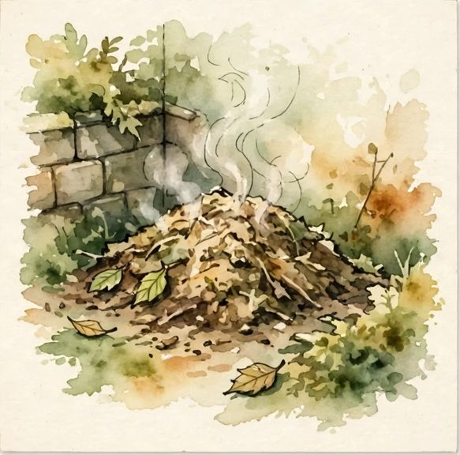
A torn page under lamplight, tape along the tear, the writing still legible through it.
Somewhere in every long project there is a page that got torn — by anger, by accident, by the critic who lives in the house and pays no rent. The apprentice's instinct is to hide it or to rewrite the whole chapter elsewhere, pretending the tear never happened. The keeper's instinct is older and cheaper: tape it back together and keep writing on it. The taped page is not a confession of failure. It is a working document. The writing shows through the tape, slightly clouded, entirely legible, and the work continues on the very sheet that was supposed to be ruined — which is to say, the work continues the way all real work continues.
There is a superstition among beginners that good work is made on clean paper by unshaken hands, and its cousin, that a damaged attempt must be disowned before a fresh one can begin. The workshop's records suggest the opposite. The taped page becomes, over years, the most instructive page in the book, because it shows exactly where the pressure exceeded the material — the sentence where the truth got too heavy for the tact, the joint where ambition outran skill. The tape does not weaken the page's authority. It signs it. Any reader can trust a page that has survived being torn by its own author.
So do not wait for the clean copy of your life before continuing the draft. Mend in place. Let the repair be visible; visible repairs are how honest buildings get their character. The person you are becoming is not the fair copy — there is no fair copy, there never was — they are the taped page, written on still, carrying the tear and the text together. Years from now, someone learning from your work will not be instructed by your perfection, which does not exist, but by your tape, which does. It will tell them that torn is a condition, not a conclusion, and that the sentence can be finished on the mended sheet.
53Bent, Not Broken
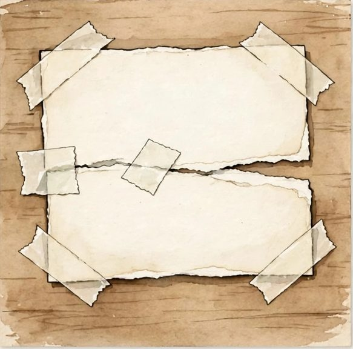
A sapling bowed under snow, its tip still green, the melt beginning.
The keeper draws a distinction the apprentices initially find too fine, and later find merciful: the difference between bent and broken. Broken is a fact, and facts deserve their grief. But much of what arrives at the workshop calling itself broken is only bent — deformed by load, by weather, by the year the snow came early and stayed. Bent material has a future tense. It remembers its shape. Given warmth, given rest, given the slow removal of the weight, it rises — not always to the original line, and the house is honest about that, but to a living line, its own, with the memory of the winter written into the grain as strength.
The error of the discouraged is to perform the wrong test. They examine themselves at the moment of maximum load and record the deflection as identity: I am the person who collapses, who quits, who cannot. The workshop insists on a fairer instrument. Judge the material when the load is off. Judge it again after a season. A great deal of what failure-narratives call character is simply weather photographed mid-storm. The bent apprentice is told: your task is not to become someone who was never bowed. Such people are either lucky or lying. Your task is to learn your own rate of return, and to arrange your life so the snows do not all come at once.
In the register there is a column the visitors rarely notice, headed simply: risen. Against name after name it records the slow straightenings — the career resumed at fifty, the friendship repaired at the third attempt, the confidence that came back altered and, the keeper swears, better rooted than before. Bent is not the shameful entry in that book. Bent is the most common entry, the human one. So let the snow melt at its own pace. Do not saw at the bowed branch in a panic. What is bent in you is not the opposite of the person you are becoming; it is, most days, the exact material they are being made from.
54The Apprentice's Ruined Piece
Every apprentice ruins a piece, and the ruined piece has a ceremony in this house: it is not swept into the bin in the heat of the moment. It is set on the bench, and the master stands with the apprentice in front of it, sometimes for a long silence, until the ruin can be looked at as information rather than as identity. The warped bowl, the cracked board, the sleeve sewn magnificently to the wrong side — each is a tuition bill already paid, and the only true waste would be to leave before collecting the education. The shame wants the evidence gone. The craft wants the evidence examined while the hands still remember what they did.
What the ruined piece teaches cannot be got from books, which is why the house is in no hurry to comfort the apprentice out of the lesson. It teaches the exact place where attention wandered — the tool knows, the grain knows. It teaches the material's hidden nature: this wood had a fault line no unruined piece would have revealed. And it teaches the most portable skill in the whole workshop, the one that transfers to every room of a life: how to be a person who has ruined something and is still, evidently, standing at the bench, unruined themselves. The piece failed. The apprentice, examined closely, did not.
In time the ruined pieces get a shelf of their own, beside the failed drafts, and old apprentices visiting the house go to that shelf first — before the trophies, before the master's work — to find their own disasters and laugh the laugh of survivors. That shelf is the house's true diploma wall. It says: everyone here has spoiled good material and lived; everyone here has a bowl that warped and a year that cracked. So set your ruined piece down gently, apprentice, and look at it until it stops being a verdict and starts being a teacher. Then pick up the next piece of material. The bench is free. It was always going to be free.
55What the Fall Taught the Hands
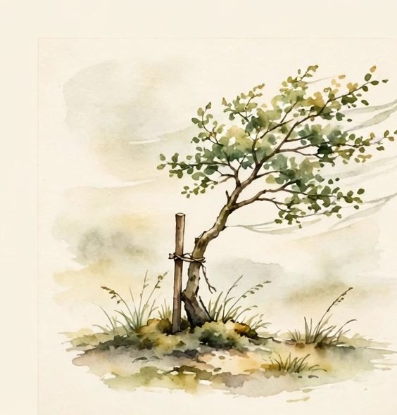
A ladder against the wall, chalk marks where the grip held and where it slipped.
The hands learn things the mind refuses to write down. After a fall — from the ladder, from the position, from the version of the story where everything was working — the mind produces a speech: excuses, indictments, a tidy theory in which the fall was either entirely fate or entirely fault. The hands, meanwhile, quietly adjust. They grip differently now. They test the rung. They have acquired, at the exact site of the failure, a knowledge that no amount of unfallen theorizing could have installed. The workshop trusts this knowledge. It is the oldest curriculum there is, older than books: the body and the craft keeping the minutes that the ego was too busy to take.
This is why the house sends apprentices back to the scene of their failures sooner than feels kind, though always at a smaller scale and a lower height. The lesson is not do not fall; the ladder is honest about gravity. The lesson is in the recovery of nerve — discovering that the hands, educated by the fall, are steadier than before it, that the fear shrinks when it is given a specific rung to hold instead of a general dread to feed. Avoidance preserves the fall at full size forever. Return, carefully, and the fall becomes a measurement: this high, this slippery, this survivable. Data, the keeper says, is what fear becomes when you visit it twice.
Keep, then, a craftsman's respect for what your falls have taught you, and do not let anyone — including the critic in the house — file them only under shame. The climber's hands, the speaker's pauses, the lover's newfound honesty about capacity: these are fall-knowledge, installed at full price. The person you are becoming will climb with exactly those hands. They are not the hands you would have chosen in the brochure. They are better, because they know things. Somewhere in the register the keeper has written the whole doctrine in one line: the fall is not the opposite of the training. On the honest days, the fall is the training.
56Chrysalis Is Not a Delay
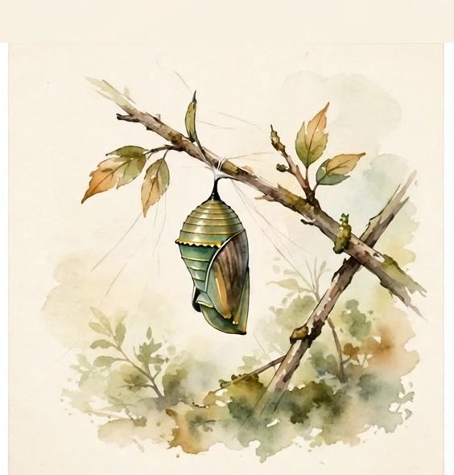
A chrysalis on a bare twig, motionless, the light going down around it.
There is a stage in every real becoming that looks, from the outside, exactly like nothing — and from the inside, exactly like the end. The workshop keeps a chrysalis on the keeper's windowsill precisely for the apprentices enduring it: the season when the old form has dissolved and the new one has not yet assembled, when there is no progress to show the visitors and no energy to want any. The creature inside is not resting, and it is not stuck. It is doing the most radical work of its life at a pace that produces no evidence. The house's teaching is blunt: this is not a delay in the becoming. This is the becoming, at its least photogenic.
The danger of the chrysalis stage is not the stillness; it is the interpretation. Surrounded by a culture of visible milestones, the person in the husk concludes they are failing at transformation itself, and is tempted to tear the thing open early — to force a premature emergence, half-formed, to reassure the audience. The keeper has seen what comes out of torn husks, and it is not a butterfly. So the house protects these seasons fiercely: fewer visitors, simpler food for the mind, the register recording only weather. Some work can only be done in the dark, unobserved, and the first skill of any keeper is knowing when to stop knocking on the husk.
If you are in such a season, let the record show that the workshop does not count it against you; it counts it, full stop, as part of the making. The wings are not late. They are under construction in the only factory that can build them. When the time comes — and it comes on the creature's schedule, not the calendar's — the husk will split, and those who called the stillness a delay will call the emergence a miracle, having learned nothing. You will know better. You will know that the person you are becoming was being assembled all along, in the one room of the house with no windows, where the most important work is done.
57Eraser Dust
At the end of a long day at the desk, there is a small gray drift in the gutter of the notebook: eraser dust, the physical remains of everything the day decided not to say. Visitors to the workshop sweep it away without thinking. The keeper brushes it into a pile and points, because the dust is the day's most underrated document. It is proof of revision — of sentences that were tried, weighed, and released; of a mind that stayed in the room with its own errors long enough to rub them out by hand. A desk with no eraser dust is either a miracle or a mausoleum. In this house, it is viewed with gentle suspicion.
The dust matters because becoming leaves almost no other trace of its daily mechanism. The finished page records what survived; the dust records the cost, the second thoughts, the small courage of admitting this line is not true enough yet. People who fear failure often fear, precisely, the dust — the visible evidence that they did not get it right the first time, as if the first time were a credential anyone actually holds. Watch a master work, the keeper says, and count the erasures. The pile beside the master's page is not smaller than the apprentice's. It is larger, and it is swept without embarrassment, by a hand that knows dust is what honesty looks like at desk scale.
So let the dust accumulate honestly, and do not perform the clean desk for anyone. Your corrections are not the opposite of your authorship; they are its method. The person you are becoming is being written the same way — drafted, rubbed out, rewritten truer — and most of the work will leave nothing behind but dust and a page that reads, at last, like the truth. Brush the pile into your palm at closing time. It weighs almost nothing. It is, the keeper insists, the exact weight of a day spent becoming: nearly invisible, and the only evidence that matters.
58Starting Over Is a Skill
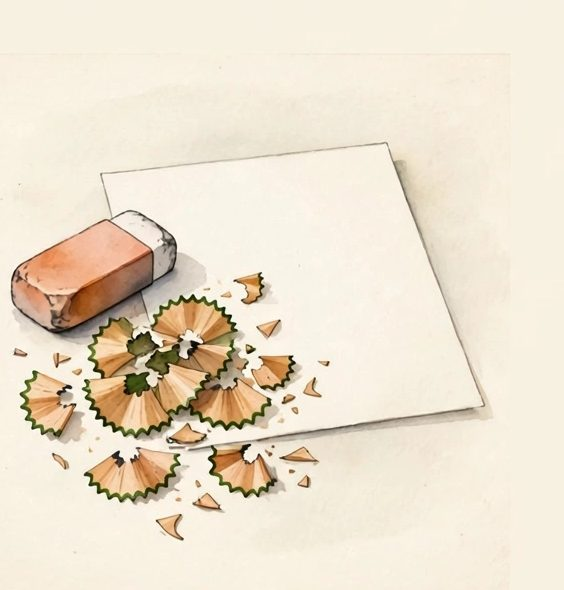
A cleared bench at dawn, one clean sheet laid out, the tools washed and waiting.
The myth says starting over is what happens to people whose plans failed. The register of this house says otherwise: starting over is a skill, with technique, with masters, with a learning curve like any other — and the people who flourish across long lives are disproportionately those who have practised it. The first restart is chaos: grief, improvisation, the wrong tools, the suitcase packed in anger. The fifth is a procedure. Clear the bench. Keep the three lessons. Release the rest without ceremony. Lay out the clean sheet. The difference between the first and the fifth is not talent. It is rehearsals, each paid for by an ending the person did not choose.
What exactly improves with practice? Precision about what is essential. The novice starting over tries to carry everything, and collapses under salvaged furniture. The practised one carries almost nothing — a few tools worn to the hand, the names of true friends, a body of knowledge that lives in the fingers rather than the files — and discovers that the lightness is not loss but design. They also learn the timing: which goodbyes are for today, which for the season's end. And they learn the deepest sub-skill, invisible from outside: how to begin again without bitterness toward the earlier draft, which was not a fraud. It was a draft. It did its work.
So if the wheel turns again — the city, the trade, the whole architecture of a life — do not waste your strength pretending this is your first time at the bench, even if the bench is new. It is not. You have cleared this surface before, in the dark, with worse tools, and the record of those clearings is the real capital you carry into the next version. Start, then, as a skilled person starts: unhurriedly, selectively, with respect for the sheet and no superstition about it. The person you are becoming has been built by every beginning you ever survived. This one is simply the latest, and you are better at it than you think.
59The Material Remembers
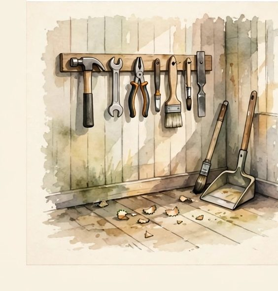
A piece of seasoned wood on the bench, its grain running dark where old rain once stood.
Ask the keeper to plane a board that spent twenty years as a barn door, and he will show you something the apprentices never forget: the wood remembers. The grain darkens where the rain habitually stood; the surface holds, invisibly, the memory of every nail. Work it, and the work answers differently from virgin timber — here it resists, here it yields, here an old fixing blooms in the shaving like a message. People are the same material. Nothing that has happened to a person is ever fully planed away. It goes into the grain, and everything built afterward is built with it, whether the builder consults the memory or pretends the board is new.
This is usually told as a sorrow, and the house wishes to correct the emphasis. Remembering material is not ruined material; it is seasoned material, and the difference matters to anyone who works for a living. The board that has survived weather knows how to stand in weather. The person who has survived their own history carries a grain no untested timber can imitate — a sense for load, for falseness, for the exact sound a joint makes before it fails. The failures are in the grain, yes, but so is everything else: every kindness absorbed, every lesson seasoned in. You do not become a new board. You become a worked one, and worked boards are the ones fit for building houses.
So the workshop does not ask its apprentices to sand themselves down to some imaginary original smoothness. It asks them to learn their own grain — where it runs true, where it knots, where the old nails sit — and to design the work accordingly, the way a master designs around the timber's nature rather than against it. The material remembers: let that be a promise as much as a warning. It remembers the falls, and it remembers the risings; it remembers who taught it, and what the light was like. The person you are becoming is not instead of that history. They are, plank by seasoned plank, because of it.
60Nothing Wasted in a Workshop
Under the bench of this house there are bins, and they are the keeper's quiet manifesto: offcuts in one, shavings in another, ends of string, bent nails straightened and kept, the mysterious hardware of dismantled things whose purpose nobody now recalls. A visitor from the world of clean desks once asked why the clutter. The keeper answered with the house's shortest doctrine: nothing is wasted in a workshop — not because everything is precious, but because everything is potentially useful to a person who has not yet seen the whole of the work. The bin is not a shrine. It is a bet on the future's imagination.
The failures of this hall belong in these bins, sorted and unashamed. The collapsed venture leaves the offcut of a real skill. The ended era leaves shavings — light, fragrant, fit for kindling the next fire. Even the bent nails of a life, the small humiliations and misjudgments, get straightened where possible and kept where not, as reminders that material under pressure changes shape, not value. What the workshop refuses is the bonfire of self-disgust, in which a person burns their own stores to punish the season that produced them. That fire warms one night and impoverishes ten years. The bins, by contrast, warm nothing immediately and end by furnishing a life.
So end the hall where the house ends every argument: at the bench, with the stores in view. Your past is not a verdict and it is not a trophy room; it is inventory. Some of it will build the next thing. Some of it will kindle it. Some of it will simply sit in the bin until a year arrives that knows what it is for. The person you are becoming does not start from nothing, and never did, and the belief that they must is the only true waste the workshop knows. Everything else — every splinter, every scar of the grain — is material. And material, in this house, is another word for hope with its sleeves rolled up.
The Workshop Desk
One desk receives all correspondence for this house — questions, corrections, greetings, and drafts you are working on. It is read in the order it arrives.
61The Body Is Also Becoming
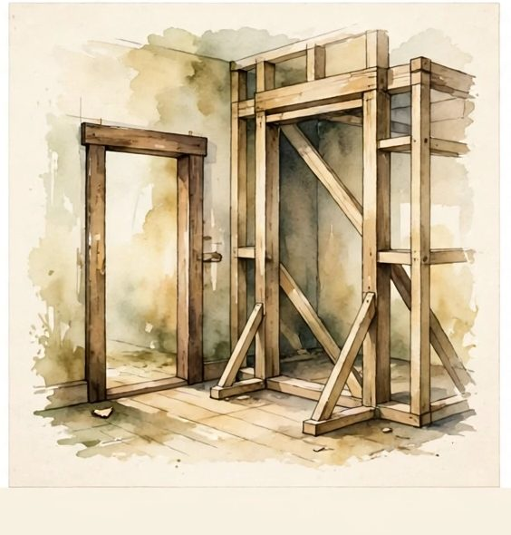
A coat let out at the seams, hanging by the window to settle into its new shape.
The workshop treats the body as its oldest apprentice — the first material every person is given, and the one that never stops being worked. It is easy to speak of becoming as if it happened in the mind's office, in plans and affirmations, while the body merely carries the paperwork. The house knows better. The body has its own workshop hours. It is growing, repairing, adjusting, and — in its own slow seasons — letting go, continuously, from the first day to the last. Not one of the keeper's apprentices has ever occupied the same body for two years running. The register simply records the fact differently: address unchanged, premises under constant renovation.
This is why the house refuses the language of the body as a finished product that later declines. A product is made once; a workshop is never made once. The hands that were apprenticed at twenty are a journeyman's hands at forty — quicker in judgment, thriftier in motion — and a master's hands later still, with a master's economy: nothing wasted, nothing forced. Each decade removes some capacities from the bench and sets others in their place, and the exchange, read whole, is not a robbery. It is a retooling. The wise apprentice learns to ask of each season not what have I lost, but what is this equipment for — a question the seasons answer generously, if asked in time.
So make your peace with the renovation, and take your place in it as a worker rather than a landlord complaining about the premises. The body is also becoming: that is the whole of this hall in one line, and it is meant as relief. You are not a statue being weathered. You are a building being lived in and altered by its inhabitant, which is you, at every age, with the keeper's blessing. Feed the workshop. Rest it without apology. And let its changes be recorded in the register in the same ink as every other kind of growth — because they are the same kind.
62Worn Shoes, Honest Miles
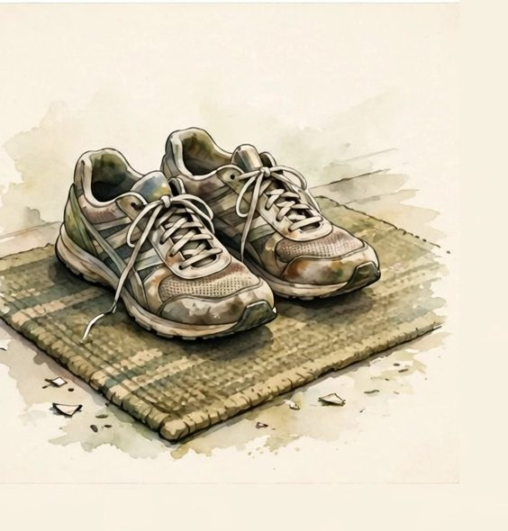
A pair of shoes by the door, soles worn smooth, laces still tied with care.
By the workshop door stands a pair of shoes that visitors occasionally mistake for rubbish awaiting the bin. The keeper corrects them, with some warmth. Those shoes are documents. The sole is worn where the foot truly travels, the heel shaped by ten thousand real decisions about direction, the leather creased at the exact geography of a life being walked. New shoes are full of intentions; worn shoes are full of information. The house reads them the way it reads the register — as the honest account, against which all speeches about the journey must be checked. Nobody's brochure matches their shoes, and the shoes are always the better source.
There is a peculiar shame people bring to the workshop about wear — as if the miles were supposed to have been traveled without trace, as if a life could be walked in socks and arrive unmarked. The keeper has no patience for it, because he has seen what unworn shoes signify: not purity, but postponement. The polished pair in the box has no stories because it declined the road. Give the house the worn pair every time. Their damage is directional; it points where its owner actually went, including the detours, including the wrong turnings that turned out to be the education. A mile honestly walked will mark the shoe. That marking is not the failure of the journey. It is the journey, signing its name.
So when you assess the person you are becoming, examine your shoes before your speeches. What have the miles actually been? Where has the wear concentrated — toward work, toward love, toward the door of whoever needed you? The answers are already recorded, without spin, in leather and sole. And if the pattern displeases you, the remedy belongs to the same honest department: walk differently, starting today, in the same old shoes, and let the new miles overlay the old at the pace of real ground covered. Becoming is not measured in the shine of the equipment. It is measured in the wear, and the wear, the keeper insists, is honorable.
63Strength Arrives, Strength Leaves
The harbor by the workshop keeps its records on the wall, in tide marks, and the keeper takes apprentices to read them whenever someone despairs at a change in their strength. The water is not always at the same line, he says. That is not the harbor failing. That is the harbor. Strength, in a body and in a life, is tidal: it arrives in its seasons with a force that feels permanent, and it leaves in its seasons with a finality that feels like verdict — and both feelings are simply what tides feel like from inside. The master's skill is not in commanding the water. It is in knowing the marks, and planning the work by them.
Read fairly, the record is consoling. The strength that leaves in one form is rarely the whole navy departing; it is one tide going out while others, unnoticed, come in. The young apprentice lifts what the older cannot; the older sees what the younger cannot, and seeing, in a workshop, is the heavier lifting more often than lifting is. The house has watched strength change its address a dozen times in a single life — from the arm to the eye, from speed to patience, from endurance of labor to endurance of waiting. None of these was the lesser strength. They were the tide finding its next line on a longer wall.
So do not curse the ebb, and do not build your identity on any single tide mark. Work with the water you have today; rest in the shallows without calling it failure; save the heavy lifts for the flood you know will return in its altered form. The person you are becoming is not the strongest version photographed at high water. They are the harbor itself — the whole wall, all the marks, the knowledge of what comes and goes and what, underneath every tide, stays. The keeper reads his own wall every spring, without flinching. It is all, he says, still harbor.
64The Eyes Adjust
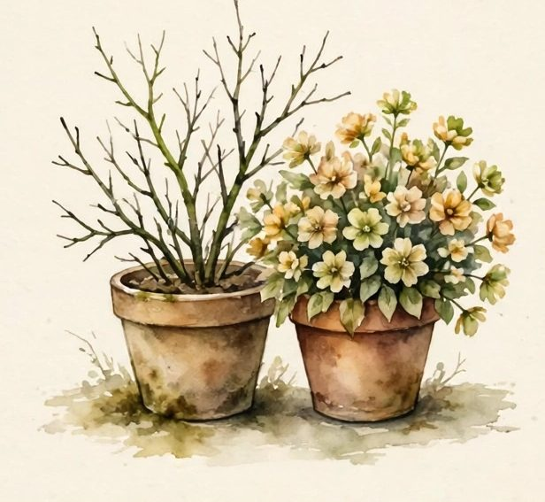
A room at dusk, the shapes of familiar furniture slowly resolving out of the gray.
Enter a dim room from bright daylight and for a while you are, to all practical purposes, blind. The furniture is there; the eyes are not yet ready for it. Then, without any decision on your part, the room assembles itself — chair, table, the door where you knew the door must be — as the eyes complete their quiet adjustment to the available light. The workshop uses this as its parable for every season in which the body's instruments change their settings. The world has not gone dark. The apparatus is recalibrating. And recalibration, though it feels exactly like loss while it lasts, is the body's way of continuing to receive the world rather than resign from it.
Adjustment is the general law of the changing body, of which eyesight is only the politest example. The tempo changes, and after a period of arriving everywhere slightly angry at the new tempo, the person discovers the new tempo has its own information in it — things visible only at that speed. The reach shortens, and the judgment about what is worth reaching for grows long. Even grief adjusts the eyes: a season in which every room seems dim, until one evening the shapes resolve and the furniture is, astonishingly, still there, and some of it is still beautiful. The house does not hurry these adjustments. It has learned that the eyes adjust on the body's schedule, and that schedule is wiser than the visitor's impatience.
So if the light seems changed, apprentice, sit down in the room a while before you redesign your life around the darkness. Let the instruments settle. Most seasons that announce themselves as endings are, on longer acquaintance, adjustments — the self learning to read a changed world with changed eyes, and succeeding, slowly, the way it has succeeded at every previous age of your life. You have never once kept the eyes you started with. You have only ever kept the looking. The person you are becoming will see things the present eyes cannot yet imagine, in light the present eyes would call dim. Trust the adjustment. It has a perfect record so far.
65Scars Are Drafts That Healed
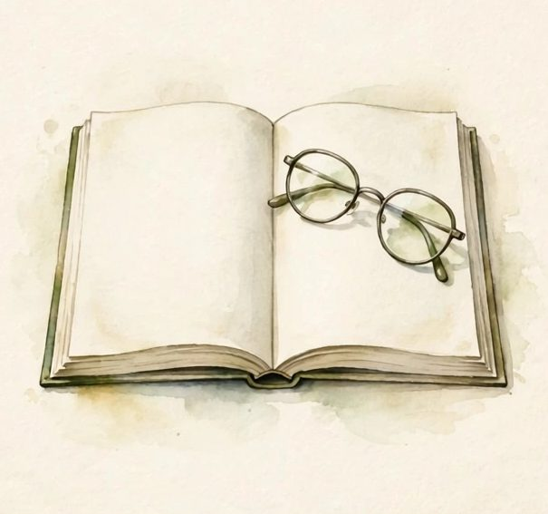
A mended sail spread on the floor, the patch neat, the stitching stronger than the cloth.
The sailmaker who visits the workshop keeps an old sail spread on his own floor, patched in nine places, and refuses — though he could afford to — to replace it. The patches, he says, are the sail's education made visible. Each one marks where the cloth was asked for more than it had, and answered with a tear, and was answered in turn by needle and patience. The house borrows his doctrine for this room: a scar is a draft that healed. It is an earlier version of the body that met the world at full force, filed its report in the only medium available, and was revised by time into something that holds. Not erased. Held.
It is important, in this hall, not to be falsely cheerful, and the keeper is careful here. Some drafts hurt to write, and the healing is not a lesson anyone would have volunteered for. The house does not call every wound a gift; it calls a scar a record, which is a sterner and more respectful word. A record says: this happened, this is where, this is what the repair looks like. Nothing more is claimed and nothing is hidden. People bring their scars to the workshop like apologies, and the keeper sends the apology back unopened. The record requires no apology. It requires only what the sail requires — that it not be sailed as if the patch were not there, and not be beached as if the patch were all there is.
So count your healed drafts as the register counts them: under work, completed. The skin closed, the seam holds, the season moved on — this is not a small entry in any life, and those who carry many such entries are not the most damaged people in the room. They are, frequently, the most documented. The person you are becoming will be, in part, a fair copy of everything that healed — which is to say, there is no fair copy, only the patched sail, still crossing water. Sail it with the respect due to tested material. A scar, the sailmaker says, is just a place where the cloth proved it could be mended. Proof is a good thing to carry into any weather.
66Slower Is a Direction Too
The path to the workshop is used by two kinds of traffic: the couriers, who pass in a rattle and a dust-cloud, and the cart, which comes up loaded in the morning at a pace that offends everyone in a hurry. The house has kept records, in its way, and the records favor the cart. What the cart carries arrives intact. What the cart's driver sees — the state of the hedges, the neighbor in trouble by the gate, the weather changing its mind — constitutes most of the actual intelligence the household runs on. Slower is a direction too, the keeper says, when the apprentices mock the cart. It is the direction in which things are noticed.
In the seasons of the body this doctrine becomes personal. Nearly everyone experiences, somewhere along the road, the discovery that their pace has changed without their permission — the hill renegotiated, the day shortened by an hour at each end. The reflex is to read it as the journey ending. The workshop reads the register differently: it is the journey changing vehicles, from courier to cart, with a corresponding change in what the journey is for. Some cargo cannot travel fast. Understanding is such cargo. So is forgiveness, so is the second, better version of anything. They go by cart or they do not go, and a person who insists on courier speed for cart-freight arrives, repeatedly, with the load in pieces.
Let the pace you have be the pace you bless, then — not because faster would not sometimes be convenient, but because resentment of your own tempo is a tax on every mile of it. The cart driver in the register is not a figure of resignation. He is the one who arrives. Set your load honestly, choose the road that suits it, and let the couriers have their dust. The person you are becoming is traveling by the means available, at the speed of real things arriving whole. Some of the most important freight of your life is on that cart right now, moving slowly, in exactly the right direction.
67The Climb Changes the Climber
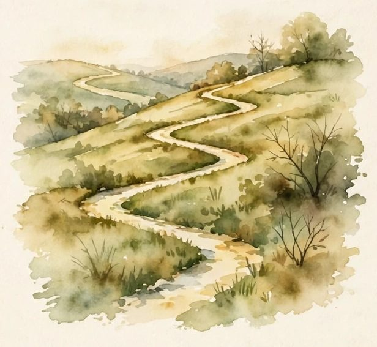
A path zigzagging up a hill, the resting stones placed where the view opens.
Nobody reaches the top of a serious hill as the same person who started at the bottom, and the workshop — whose path climbs, deliberately, past its windows — treats this as the hill's main product. The view is a bonus. The climber is the work. Somewhere on the zigzags, the body renegotiates its contract with effort: the breath finds its economy, the legs learn the difference between pain that signals damage and effort that merely signals effort, the mind discovers it can hold a conversation with discomfort without obeying it. These are not metaphors to the keeper. They are the actual curriculum, and the hill is simply the only classroom where they are taught in the body's own language.
It follows that the climb cannot be delegated, imported, or faked — a fact the apprentices test annually and annually confirm. Carried up, a person arrives at the view unchanged, and the view does nothing for them; it is information without an instrument to read it. Climbed, the same view is a document the whole body can understand. The house extends this, gently, to the other hills of a life: the long education, the slow recovery of confidence, the years of caring for someone. Each was going to change the climber anyway. The only question the register ever asks is whether the climber noticed — whether they let the ascent be the training it already was, instead of merely an obstacle between them and a photograph.
So climb your current hill as a student, not as a defendant. Name the changes as they happen: the new patience, the altered priorities, the strength arriving in an unglamorous form. You are not behind schedule; there is no schedule — there is only altitude, gained honestly, and a person being remade by the gaining. At the resting stones, look back not to measure the distance but to greet the earlier self, who started down there with thinner shoes and a thinner understanding, and did not quit. The person you are becoming is on this path, above the one who began it. The hill did that. Hills, given time and a willing climber, always do.
68Reading the Rings
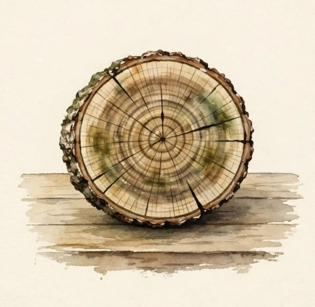
A felled trunk beside the path, its rings exposed like the pages of a ledger.
By the workshop path there lies a trunk the storm brought down some years ago, and the keeper has left the cut face exposed, the way other houses hang a painting. The rings are all there: the fat years, when the tree grew greedily in the good rain; the thin years, pinched close, when it grew anyway. Apprentices are brought to read them because the trunk is the refutation of every simple story. No ring is the tree's true self. The drought years are not a failure of the tree, and the fat years are not its virtue. They are weather, recorded. The tree did the only thing asked of anything alive: it added a ring.
The house applies this, without sentimentality, to the reading of a life. There will be fat years in the register — of growth visible from across the road — and thin years where the whole achievement is that a ring exists at all: narrow, dark, and complete. Outsiders tally only the fat years and call the thin ones wasted, but the keeper, who has read many trunks, knows the thin rings are often the densest wood in the tree. Survival at small radius is still growth; it is, in the old timber, the part that bears the load. A person is not the sum of their best seasons. A person is the whole cross-section, and the whole cross-section is what stands.
So learn to read your own rings with a forester's fairness. Do not saw out the thin years in the telling, and do not gild the fat ones into a standard the future must meet. Each was the correct response to its weather, made by the person you then were, with the rain that then fell. The person you are becoming is, quite literally, the next ring — it will record this year's weather in this year's width, and it does not need your permission or your despair. Add the ring. The trunk by the path, read whole, has never yet produced a reader who found it wanting. It produces readers who stand a while, quietly, and then go back to growing.
69Seasons of One Body
The keeper keeps, pinned above the desk, four drawings of the same tree — bud, leaf, fruit, and bare — not as decoration but as a correction. Visitors keep making the error the drawings exist to fix: they meet the tree in one season and describe it as if the season were the tree. It is a bare tree, they say in winter, of a being that will be unrecognizable by June. The house insists on the longer acquaintance, because every apprentice in the building is that tree. A body has seasons, plural, internal ones that do not consult the calendar — springs of appetite and initiative, long summers of capacity, autumns of gathering-in, winters of repair conducted in apparent stillness — and wisdom begins at refusing to issue a final description from inside any one of them.
The seasons explain what the scoreboard cannot. The winter body is not the summer body failing; it is the same body doing winter's work, which happens to be invisible from outside and non-negotiable from inside. Roots grow in the dark months; that is not a consolation invented by the workshop, it is how the tree allocates. Likewise the person who seems, in a given season, to be only enduring — resting more, producing less, turning inward — may be doing the exact physiology of their next spring. The house has buried too many premature verdicts to issue another. It has learned to say, of every season including this one: noted, weather recorded, judgment reserved.
So refuse to be described — by others, and harder still, by yourself — in the grammar of a single season. You have been the bud and will be surprised by your own leaf; you have had a winter that looked conclusive, and were wrong, and the record of that error is now an asset. The person you are becoming is not one of the four drawings. They are the tree that appears in all of them, unchanged in identity, unrecognizable in aspect, season after season. Pin that above your own desk. When the current weather speaks with total authority, look at the page, and remember the other three.
70The River Changes Course
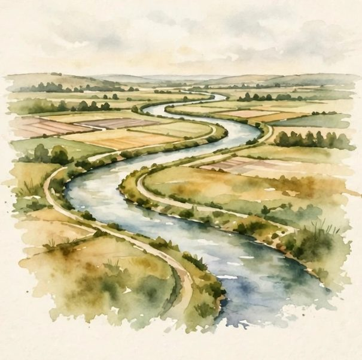
A river bend seen from the hill, the old dry channel looping away through the grass.
From the hill above the workshop you can see the river's whole argument with itself: the bright current taking the new bend, and beside it, looping pale through the grass, the old channel — dry now, unmistakably a riverbed still, holding its shape and its history of water. The keeper takes apprentices up there when a life changes course mid-stream, because the river is the one teacher who never apologizes for the bend. Rivers do not hold inquiries into whether the old course was a mistake. The water found the gradient had changed — an earthquake, a fallen cliff, a slow accumulation of silt — and the water, being honest, moved. The old channel is not an embarrassment. It is the archive.
A body's course changes the same way, and so does a life's, usually for reasons as impersonal as silt: the ground shifts under everyone. What the workshop counsels against is the demand that the river justify the new bend against the old map — that a person explain, forever, why they no longer do at fifty what was natural at twenty-five, or want at sixty what would have bewildered them at thirty. The river does not testify. It flows, and the verification of a course is never the history; it is whether the water is moving and whether the banks are green. By that test, a changed life is usually healthier than a defended one, because defense, not change, is where rivers — and people — actually stagnate.
Honor the old channel, then, as you pass it. It carried real water in its years; whole towns of your life were built on its banks, and some of them still stand, visited now by memory rather than by current. But do not camp in the dry bed out of loyalty, calling the dust authenticity. The person you are becoming is downstream, in moving water, and they will not be reached by standing where the river used to be. Go down from the hill. The current is not a betrayal of the river you were. It is the same river, keeping the oldest promise water makes: to find its way, by whatever course the country allows, all the way to the sea.
71Photographs of Earlier Weather
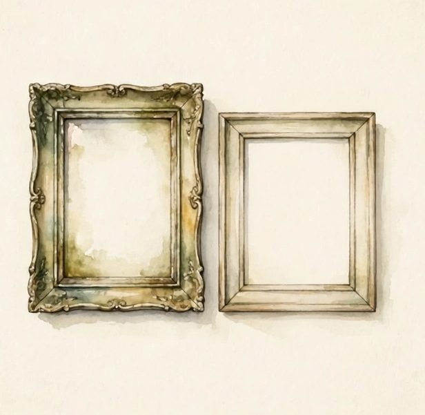
A row of photographs on the shelf, the same garden gate under different skies.
On the workshop shelf stands a row of photographs of the same garden gate, taken across forty years: the gate in snow, in blossoms, in the gold of a dry summer, in fog so complete the gate is mostly a rumor. Apprentices play at guessing which is the true one, and the keeper lets them play until somebody says the obvious: all of them; none of them; the gate is not a weather. So it is with the photographs people carry of themselves — the face at twenty, the figure at forty, the self preserved in some decade's light and thereafter described in the present tense. Every such photograph is honest evidence. None of it is the current weather, and trouble begins exactly where the two are confused.
The confusion takes a familiar form in the register: the person who introduces themselves forever by an old photograph — the athlete, the beauty, the terror of the department, the one who could — and experiences the present body as an impostor standing next to the portrait. The house is gentle with this, because it is gentle with everyone, but it is firm about the filing: photographs go in the archive, not on the door. The archive is honored there; the keeper will show you his own row, any time. But the name on the door must be the name of whoever currently answers it, and the face that meets the morning is the current face, which has earned its tenancy exactly as the earlier ones did, by living.
So keep your photographs, and keep them kindly, the way the keeper keeps his gate. They are the record of weather you have survived and savored, and a person who burns their archive has not become new — only undocumented. Visit the old skies. Then close the album and go out into today's, whatever it is, dressed for it honestly. The person you are becoming is not competing with a photograph; photographs do not grow, and that is their whole disadvantage. You, who do, are under no obligation to resemble your own evidence. The gate in this morning's fog is as much the gate as the gate in blossom. More, in one respect: it is the one still standing in weather that is actually happening.
72Still Growing at Any Age
The oldest tree by the workshop wall is older than the workshop, older than the keeper's grandfather's memory of it, and every spring it performs the same small insurrection: a bright new shoot, green as any sapling's, pushed out of wood that a reasonable observer would call finished. The keeper points it out to apprentices who arrive believing that growth is a young material's game — that there is an age after which a person is only maintained, like a fence, until the weather finishes them. The tree's testimony is not motivational. It is statistical. Things alive grow while they live; that is nearly the definition of the arrangement, and nobody in the building has yet found the age at which the exemption begins.
What grows late is different from what grows early, and the hall does not pretend otherwise. Late growth is rarely height. It is the shoot, not the trunk: a new skill taken up without ambition, a tenderness where there was armor, an interest in a subject that would have bored the younger self senseless and now reads like a letter addressed personally. Late growth also has an advantage no sapling enjoys — it grows out of seasoned wood, in full knowledge of weather, unhurried by the need to become a forest by Friday. The register notes that the house's most instructive apprentices include several who began, by the world's accounting, absurdly late, and whose rings therefore record something the early starters cannot: proof that the schedule was never the point.
So end the hall with the tree, as the keeper ends his tour of it: by standing still a moment. Whatever season you have assigned yourself in the story — promising, prime, past it — the wall outside disagrees, in green. Growth is not a compliment the young pay themselves. It is the ongoing behavior of living material, and you are living material until further notice. The person you are becoming does not retire from becoming at any age the calendar recognizes. They put out the shoot, absurd and bright, in whatever spring is currently on offer — and the tree, which has done this more times than anyone can count, offers the only commentary the house endorses: again.
73Trying On a Life
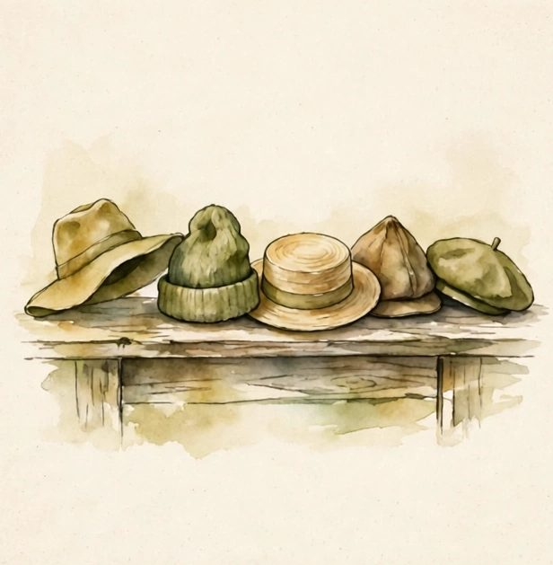
A row of coats by the fitting-room door, each a different cut, each waiting its turn.
Off the main workshop there is a small room the apprentices use more than any other, though no work is technically done in it: the fitting room, where the coats hang. A coat here is a life — a trade, a city, a manner of days — and the house rule is that coats are tried on, worn around the room, sat down in, reached up in, before any verdicts are issued. Some are splendid standing still and impossible to work in. Some are plain until the third wearing, when their pockets turn out to be exactly where a life needs pockets. The keeper permits all fittings and forbids only one thing: deciding from the doorway, by the color, what a coat is like to live in.
The doctrine exists because the register is full of errors of both kinds. There are the lives never tried — dismissed from the doorway on the evidence of a reputation, a parent's opinion, a single embarrassing afternoon in the wrong decade — which might, on wearing, have fit like weather. And there are the lives bought outright on the first glimpse, worn for twenty years without ever being, in the honest sense, tried: the coat kept because it was expensive, because others admired it, because returning it would require a conversation. The fitting room's wisdom is procedural rather than romantic. Try, then judge. Wear it in the rain of an ordinary week. Sit down in it. A life, like a coat, shows its truth at the seams, under use.
And trying on commits you to nothing — the house wants this understood by every apprentice who hesitates at the door of the room, afraid that curiosity is a contract. To rehearse a life for a season is not to betray the current one; it is to gather the only evidence that has ever settled the question of fit. Some coats you hand back with thanks and a clearer knowledge of your own shoulders, which is not a failed fitting but a successful one. The person you are becoming is standing in that small room, in front of the long mirror, turning slightly. Let them look as long as they need. The keeper is in no hurry, and the coats are patient.
74The Rehearsal Is Real Life Too
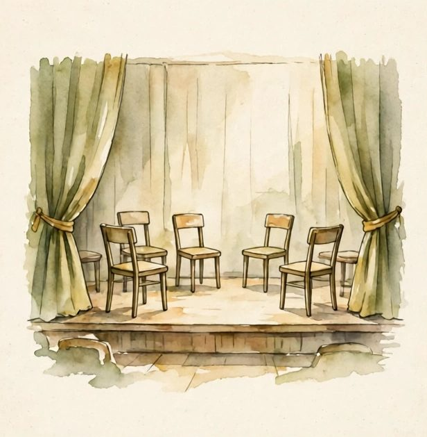
A stage in rehearsal light, chairs in a half-circle, scripts open and annotated.
There is a slander apprentices repeat about their own beginnings: that the rehearsal doesn't count, that real life starts at the performance — the real job, the real city, the real version of the self, permanently deferred to a premiere that keeps moving. The keeper, who has watched many companies of actors pass the workshop on tour, corrects this with some force. Ask any player which they remember, decades on: the performances blur into one long evening, but the rehearsals stay separate and vivid — the discoveries, the failures laughed over, the afternoon the scene finally stood up. The rehearsal was not the waiting room of the life. For long stretches, the rehearsal was the life, and it deserved to be lived as such.
The same filing error distorts whole biographies in the register. The years of training get described as preparation, as if the person in them were an understudy for themselves. The years of the probationary job, the apprenticeship, the first awkward season of a marriage or a craft — all filed under before, while the person's actual heartbeat was going at full rate in every one of them. The house proposes a correction: there is no before. There is the work at every stage of readiness, and the rehearsal stage, properly seen, is where most of the becoming is smuggled in — precisely because nobody is watching, and the self, unobserved, dares the experiments the performance would never risk.
So honor the rehearsals you are currently in, and stop apologizing for their unfinished lighting. You are not backstage from your life; there is no other stage. Rehearse with full attention, the way the good companies do, knowing the discoveries made at half-light are the ones the bright evenings run on. If this season is practice, then practice is the season, and it counts in the register at full value. The person you are becoming is being built right now, in the rehearsals — in the tried line, the adjusted stance, the scene run once more, better. The performance, when it comes, will simply be the rehearsal that other people happened to witness.
75A Career Is a Long Draft
The keeper keeps, in a drawer of the desk, a strange pair of exhibits: the first page an old friend ever wrote for money, and the page the same hand produced last spring. Between them lies a career — and the lesson of the drawer is that the career is best understood not as a monument but as a draft: one long document, revised across decades, full of crossed-out decades and chapters that embarrass their author, margins crowded with the handwriting of employers, accidents, and second thoughts. Nobody wrote the final version. Nobody was issued the fair copy. The work went out, year after year, in the state it had reached, and the state kept moving — which is the biography of every honest working life ever examined at close range.
This framing rescues the apprentice from the two great career superstitions: that somewhere there exists a correct path one has deviated from, and that the deviations are the waste. The drawer suggests otherwise. The abandoned trade left its tools in the hand. The disastrous two years left their judgment. The draft reads the way drafts read — unevenly, with passages of accidental brilliance and long dutiful stretches — and the unevenness is not the scandal of the thing. It is the thing. A career is long precisely so that it can be revised; the early chapters are allowed their clumsiness because the later chapters are coming, and the person writing them is, chapter by chapter, becoming the kind of author who could not have written the beginning.
So hold your own working life the way the keeper holds that drawer: as a draft in progress, open on the desk, not as a verdict under glass. The current chapter's difficulties are marginalia, not conclusion. Where the draft truly stalls, remember the workshop's oldest remedy — you are permitted to revise, to cut, to begin a section over in a new hand, at forty, at sixty, in the rain. The person you are becoming is the author as much as the text. And an author, as any desk in this house will testify, is simply a person who has decided that the draft continues.
The Workshop Desk
One desk receives all correspondence for this house — questions, corrections, greetings, and drafts you are working on. It is read in the order it arrives.
76Costumes Teach the Wearer
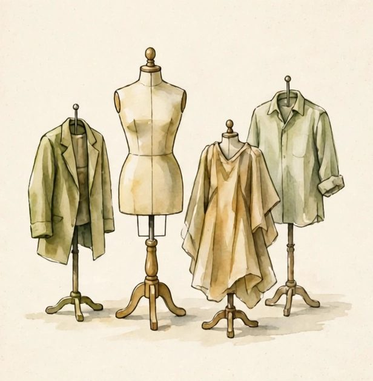
A costume rack after the show, the garments still holding the shape of the parts played.
The wardrobe mistress who lends the workshop her mending has a saying the keeper has stolen for the register: every costume teaches its wearer something, and the wearer who believes they are only pretending has not been paying attention. The shoulders learn the officer's carriage within a week. The voice finds the judge's tempo by the third rehearsal, and some evenings brings it home to dinner. This is usually discussed as the danger of roles, and it is that — but the house files it also under education. A role is a controlled experiment in being someone: a set of postures, permissions, and prohibitions, tried on the body, with measurable effects on the instrument. No one who has worn a part remains quite where the fitting began.
The apprentices arrive fearing this, as though the self were a clean garment that roles soil. The keeper's records suggest the self is more like the actor's body itself: it grows by what it is asked to do. The season spent managing taught the timid apprentice the physical grammar of authority — where to stand, how to let a silence work — and the grammar stayed when the post ended. The years of caretaking taught another a fluency in gentleness she had not been issued at birth. Even the ill-fitting roles instruct: the wearer learns the exact shape of their own refusal, which is knowledge no amount of doorway-judging provides. A person is, in no small part, the sediment of every costume that ever fit well enough to wear twice.
So choose your costumes with the seriousness of a casting director and the playfulness of a wardrobe mistress, for they will be teaching you in your sleep. Try the part that asks for the quality you lack and privately study how it feels from inside — not to fake it, but to find out whether it is, in fact, foreign, or merely unpractised. Some roles you will return to the rack with relief, educated. Some will quietly alter the cut of everything you wear afterward. The person you are becoming is being tailored, fitting by fitting, by every part you consent to play. Attend the fittings. The mirror in that small room has seen more truths than any pulpit in the county.
77Two Kinds of Mornings
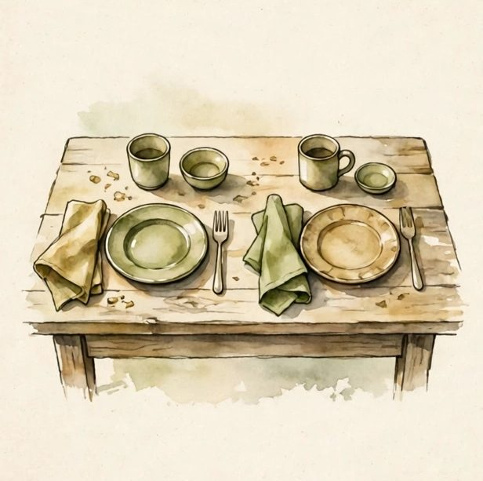
Two windows side by side: one with the day's tools set out, one with only the light coming in.
The workshop recognizes two kinds of mornings, and honors both, though visitors usually only recognize one. There is the morning of the assembled self — tools laid out, list written, the coat of the day put on with something like ceremony — and there is the morning of the unassembled self, when the person arrives at their own bench in pieces, slowly, with the kettle doing the early thinking. The first morning gets all the praise in the world's literature of productivity. The keeper's register, kept honestly, shows the second morning carrying nearly half the actual work of every life in the book. A person is not a machine with two settings, broken and working. They are a workshop, and some days the workshop opens late and quiet, and opens anyway.
The two mornings correspond to the two kinds of roles a person under construction must learn to play: the role performed at full readiness, and the role performed from inside the process — the teacher teaching while still learning the subject, the parent parenting from within their own unfinished renovation, the friend showing up with comfort they have not yet fully located in themselves. The superstition says the second performance is a fraud. The house calls it the more common and more honorable of the two. Almost everything important in the register was done by people in their second kind of morning — unready by the brochure's standard, present by the only standard that has ever mattered.
So do not grade your mornings against each other; they are not rivals, they are shifts. On the assembled mornings, build. On the unassembled ones, do the kettle-work: keep the bench warm, answer what must be answered, let the role be worn loosely until the self catches up inside it. Both are working days. Both go in the register at full value. The person you are becoming is not the one who has only first-kind mornings — that person is a poster. They are the one who has learned to open the workshop in both kinds of weather, and to let the day count either way.
78Apprentice, Journeyman, Master
Along the workshop's long wall stand three benches, and though apprentices take whichever is free, everyone knows the old joke: the benches are the biography. At the first bench, the apprentice's, the tools are new and the questions are constant and the work is learning where the edges are, usually by meeting them. At the second, the journeyman's, the tools are worn to the hand, the questions fewer and deeper, and the work begins to travel — other towns, other masters, other ways of holding the same saw. At the third bench the tools are old friends and the questions have become constant again. The keeper, who has sat at all three, says the joke is on anyone who thinks they are stages on a staircase. They are rooms, and a life moves between them more than once.
For the secret of the benches — the house's, and this hall's — is that no one graduates permanently. Every new material returns the master to the apprentice's bench, bewildered and clumsy and asking where the edges are. Every familiar material lets the newest apprentice sit, for an afternoon, in something like mastery. Whole careers oscillate: the journeyman years of wandering competence, the apprentice mornings inside a master's decade. The trouble only starts when a person insists on one bench as their identity — the eternal apprentice, refusing every commission of trust, or the self-declared master, refusing every lesson, each frozen in a costume the fitting room never meant to be permanent.
So know which bench today's work asks for, and sit at it without nostalgia or shame. To be an apprentice at the new thing is not demotion; it is the correct furniture for learning, and it has the best lamp. To be a master at the old thing is not a throne; it is a responsibility with worn tools. The person you are becoming will sit at all three benches before the year is out, sometimes before lunch. Let them. The house measures a working life not by the bench finally claimed, but by the willingness to take the right seat for the work in hand — and to keep, at every bench, the apprentice's one indispensable tool: the question, kept sharp.
79Moving Into a New Version
A room half moved into: boxes open, one chair placed, the curtains already up.
Moving into a new version of yourself resembles the other kind of moving more than the inspirational literature admits: it is mostly boxes. The new rooms are bare and echo strangely; the familiar furniture looks wrong in them; for the first weeks you reach, in the dark, for light switches that are not where your hand expects. Apprentices report this phase to the keeper as evidence that the move was a mistake. The keeper, who has supervised many such removals, corrects the filing. The strangeness is not the verdict on the new rooms. It is the acoustics of any space not yet lived in. Familiarity is not a property of places or of selves. It is a deposit, paid in ordinary days, and it has never once been payable in advance.
The technique of the move, as the house teaches it, is unglamorous. Unpack the essentials first: the three habits that constitute the day's skeleton, the people who must be told the new address, the one ritual that makes any room yours. Live out of boxes for the rest without apology — some parts of a former version stay packed for a season, and a few boxes, opened years later, will contain things you no longer recognize wanting. That is not waste; that is the inventory correcting itself. Meanwhile the new self is furnished the way real rooms are: gradually, by use, with the chair migrated three times before it finds its corner and the light teaching you, evening by evening, where the reading chair belongs.
So give the new version its settling time, and do not hold the housewarming until the echo softens. You will know the move is complete by a small sign the keeper trusts above all ceremonies: the morning you reach for the light switch in the dark and your hand goes, unerringly, to the new place. What was effort becomes address. Until then, live in the half-furnished rooms as a tenant in good faith — working, resting, keeping the kettle on. The person you are becoming is not waiting at the end of the move. They are the one carrying boxes, deciding where things go, becoming familiar with themselves one ordinary day at a time.
80The Empty Chair at the Desk
The desk at evening, the register closed, one chair left pulled out as if for a guest.
At the end of the keeper's desk there is a chair that no one in the workshop uses, and at closing time it is always left pulled out, as if for a guest expected late. Visitors eventually ask. The chair, the keeper explains, belongs to the person the current apprentice is becoming — the future self, who is, in the only sense that matters, a member of this household whose seat is being kept. It is not superstition, or not only superstition. It is administration. Every decision in the workshop is made at a desk with that chair in view: the work accepted or refused, the habits kept, the failures filed as compost or as garbage. The empty chair asks its silent question of all of it: will the one who sits here next year be glad we did this?
The chair also corrects a cruelty in how people under construction are usually discussed — as though the present self were merely scaffolding, valuable only for the building it will become. The keeper's arrangement is more courteous. The future self has a chair; the present self has the desk, the lamp, the register, the day's actual authority. Neither is the other's servant. They are successive tenants of one workshop, bound by a simple courtesy: the present tenant keeps the place in repair and leaves the stores stocked; the future tenant, in due time, sends back the only payment available — gratitude, mostly, and the keeping of the same chair for whoever comes next. The house has run on this courtesy for generations and has never yet been bankrupted by it.
So end the hall where the workshop ends its day: with the chair pulled out and the register closed, and a seat kept, deliberately, for the person you are becoming. They are not a stranger to impress or a judge to fear. They are tomorrow's worker arriving at a bench prepared by today's — which is to say, by you, in your tired repetitions and swept corners, your mended pages and your jars of pebbles. Leave the place fit for them. And when, in some future closing time, you find yourself sitting in that very chair, remember to pull out the next one. The line of the becoming is unbroken in this house, and the chair, apprentice, is how it holds.
81Parent, Partner, Friend: Concurrent Drafts
Nobody in this house holds one role at a time. The same person is a parent at breakfast, a partner by noon, a friend by telephone in the evening, and all three are drafts in progress at once — none of them final, none of them waiting politely for the others to be finished first. The workshop keeps the manuscripts in a single binder, because they are written by a single hand, and the improvements in one are forever leaking, usefully, into the others. Patience learned at the child's bedside turns up, uninvited and welcome, in the marriage. Honesty practiced on a friend reappears at the office.
The error the house corrects here is the idea of sequence: that a person should finish being one thing before beginning to be another. Life does not run in chapters that tidy. The parent draft is revised by the partner draft in real time; the friend draft is edited by grief, by joy, by a phone call at the wrong hour that turns out to be the right one. The register does not ask which role is the real one. It files them together and notes, in the margin, that the handwriting is improving across all three at roughly the same slow speed.
So the counsel of this room is modest. The keeper, who keeps all three drafts on one desk, regards the modesty as the most practical advice in the building. Do not wait to be a finished parent before attempting to be a decent friend. Do not postpone the partnership until the self is complete; the self is not scheduled to be complete. Work the drafts concurrently, forgive the crossings-out, and let each role borrow the others' best sentences. A life is not three books. It is one book with three plots, and the plots are allowed to help each other.
82Chairs of Many Sizes
A row of chairs along the workshop wall, none of them matching.
The workshop keeps chairs of many sizes along its wall, and the keeper will tell you they are not furniture but instruments. A role is a chair. You sit in it for a while — as the apprentice, as the host, as the one who knows, as the one who is learning in public — and the chair teaches your back a posture. Some chairs fit at once. Some are too grand and make the sitter feel like a child at a banquet. Some are too small, and the discomfort is the lesson: you have outgrown this seat, and standing up is not ingratitude.
Trying a role honestly means sitting down properly, not perching for a photograph. The house has watched visitors try the chair of the leader for an afternoon and the chair of the beginner for a year, and it records that the second taught more. A chair sat in fully — with its duties done, its hours kept, its awkwardness endured — gives the sitter information no amount of watching from the doorway can provide. And when the sitting is done, the chair is returned to the wall without ceremony, to wait for the next person, or the same person in a later season.
There is a freedom in furniture that the register insists upon. Visitors sometimes laugh at the row of mismatched chairs, until the day one of them fits them exactly. Chairs are not skins. A role tried on is not a verdict on the soul, and a role laid down is not a betrayal of it. The person is the one who moves among the chairs; the chairs are only where the sitting happens. Try them in good faith, sit in them honestly, and stand up when the wood begins to pinch. The wall has room for all of them, and so, the house finds, does a life.
83Light Under the Door
A thin line of lamplight under a closed door, late in the house.
Long before a change walks out into the corridor, it shows as light under a door. Someone is awake behind it — practicing scales nobody will hear praised, reading the difficult book, writing the pages that are not yet for anyone, rehearsing the person they intend to become in the one room where failure is still private. The house knows this light well. The keeper, making his rounds at night, does not knock. He has learned that the light under a door is a kind of promise being made in the only currency that matters: hours, spent where no one is applauding.
Most becoming happens at this scale for a long time, and it can feel like nothing is happening at all. The door stays shut. The corridor stays ordinary. But the register keeps a different accounting: an hour behind that door is a brick; a hundred hours are a wall; and one ordinary morning the door opens and a noticeably steadier person walks out, to the mild surprise of everyone who thought the corridor was the whole house. The surprise is unjustified. The light was there the whole time, thin as a blade of grass and just as indicative of what is growing.
So if your own change is still at the stage of light under a door, the house advises you to respect the stage rather than apologize for it. Not everything rehearsed owes the world an early performance. Keep the hour. Keep the lamp trimmed. Some doors open in a season and some in a decade, and the register does not grade either one. It only notes, for the encouragement of the corridor, that behind every finished room in this house there was once a shut door with light beneath it.
84Closing the Rehearsal
Every rehearsal ends, and this hall — the hall of roles tried on — ends with it. The costumes go back on the rail: the uniform, the gown, the borrowed confidence, the part that fit and the part that never did. Nothing about the closing is sad. A rehearsal is not the play; it is the play's workshop, and a workshop's success is measured by what leaves it. What leaves this one, if the trying was honest, is not a costume but a carriage: the shoulders remember the posture even after the coat is hung up. The role is returned. The lesson stays in the body, where all real property is kept.
The keeper is careful, at the closing, to distinguish between the parts that failed and the parts that finished. Some roles end because they were wrong — tried in good faith, found wanting, laid down without shame. Others end because they were completed: the season of being the student closes because the studying took; the season of being the newcomer closes because the place became home. The register files both kinds under the same heading, served, because a role that taught you it was wrong has done exactly as much work as a role that taught you it was right.
So the hall closes its door gently. The rail of costumes will be opened again for others, as it was opened for you, without comment on how any of it looked from the corridor. Whoever you were rehearsing to be, the rehearsal has made you someone slightly different from the person who first picked up the costume — that is the whole transaction, and it has already happened. The next hall concerns what to do with the earlier versions this one leaves behind. But stand a moment in the quiet room first. The rail is full, the floor is swept, and the workshop, as always, is about to begin again.
85Packing the Old Rooms
Boxes labeled in pencil, stacked in a room that is being left well.
Moving out of an earlier self is a species of moving house, and it deserves the same care. The house has a protocol for it, older than any keeper: pack the old rooms properly. Go through the drawers of the former life one at a time. Some things are to be carried — the skill, the scar's instruction, the friendship, the photograph. Some are to be given away while they can still do someone else some good. And some are to be set down in the room and left there, not in anger, but in the plain recognition that the next house has no shelf for them.
The temptation, the register notes, is to pack in either haste or contempt — to throw the whole former life into bags at midnight and call the mess a fresh start, or to curse every object as it is handled. Both fail the same way: unpacked grief travels free. What is packed carelessly is unpacked for years, at inconvenient hours. What is packed with attention — folded, labeled in pencil, acknowledged for what it was — arrives manageable. The earlier self was a tenant who paid his rent in experience. He deserves a fair inventory, not a bonfire and not a shrine.
When the last box is taped, the house advises a final walk through the empty rooms. An empty room tells the truth about size more honestly than a full one, and the truth is usually kind. They will look smaller than they felt when you lived in them; that is not disappointment, that is measurement. Thank them if you can, or simply nod if you cannot yet. Then close the door without slamming it. The rooms stay standing in the register's street, and other people may live in similar ones after you. Your address has changed. That is all, and it is everything.
86The Skin That No Longer Fits
A shed skin on the path, perfect, empty, and already outgrown.
On the paths near the workshop you may find, in the right season, a shed skin — the whole shape of the creature, perfect and empty, lying where it was stepped out of. The house keeps the image for a reason. Growth, in the older world, is not always an addition. Sometimes it is a subtraction performed by the body itself: the skin that fit exactly last year splits, not because it was badly made, but because what it covered has increased. The tightness comes first. The tightness is not a failure of the skin. It is the announcement.
People feel this announcement in their arrangements and misread it as restlessness or ingratitude. A whole corridor of this house is devoted to misreadings of exactly this kind, and the desk keeps its answers patient for them. The habit that once organized the day now chafes. The opinion that once felt like courage now feels like a coat in August. The ambitions of the earlier version, examined honestly, pinch. The register's reading is plain: a life can outgrow its fittings the way a snake outgrows its skin — from the inside, by succeeding. Nothing went wrong. Something went right, and the covering has to change because the covered thing has.
There is no need to despise the old skin, and no need to climb back into it when the new one feels tender, as new coverings do. The tenderness passes; it is a season of weather, not a verdict on the fit. The creature in the garden does neither. It leaves the perfect empty shape on the path, where it instructs the walkers, and it goes about its business in a skin that fits the present size. That, says the keeper, stamping the page, is the whole doctrine: fit is a season, not a loyalty oath.
87Loyalty to a Former Self
A delicate question comes to the desk more often than any other: is it disloyal to change? The person asking is usually thinking of their younger self — the one who made the vows, chose the trade, swore the oath, drew the map in thick ink — and feeling that every revision is a small betrayal of someone who trusted them. The house answers carefully, because the feeling is honorable even when its conclusion is wrong. You owe the former self gratitude. You owe him honesty. You do not owe him obedience, and he, being you, would be the first to understand the difference once it is explained.
Loyalty, examined, is a relationship between the living. The earlier self is not injured by your growth; he is, in the only sense available, its author. The vows he made were made with the map he had, and the map was drawn honestly. To navigate now by better information is not to call him a fool. It is to complete his work. The register keeps a phrase for this: the former self is to be honored as a founder is honored — his portrait on the wall, his name on the founding page, and his policies quietly open to amendment by the parliament he created.
So keep faith in the correct direction. The founder's portrait, in this house, is hung where the workers pass it daily, which the keeper considers thanks enough. Let the past be your ancestor, not your landlord. Ancestors are owed remembrance, a chair at the table on feast days, and the courtesy of being consulted. They are not owed the keys to the present house, and they never asked for them — that demand is made by fear, renting the founder's name. The door between the versions stands open in this house, and traffic on it is friendly, daily, and almost entirely one-way: thanks going back, freedom coming forward.
88The Bicycle by the Gate
An old bicycle by the gate, kept oiled, waiting without complaint.
Not everything earlier is to be packed, burned, or retired, and this room exists to keep the hall honest. By the workshop gate stands a bicycle, old, plainly out of fashion, and kept oiled. It belonged to an earlier version of the keeper himself — the boy who rode it everywhere, for whom it was speed and freedom and the whole geography of the world. The grown man does not ride it daily. He also refuses, with some heat, to throw it away. Some old things are not baggage. They are roots with handlebars.
The discernment this room teaches is the difference between a chain and an anchor of the good kind. The chain is the past that pulls you backward into a size you have outgrown. The kept bicycle is the past that waits, patient and usable, for the days when the present self needs reminding that joy used to be simple and can be again. Earlier versions leave both kinds of object behind them, and the work of this hall is sorting, not sweeping. Burn the contracts written in shame. Keep the bicycle. You will know them apart by how they feel in the hand: one tightens, the other rings like a bell.
Every few months, the story goes, the keeper takes the bicycle down the hill road, slowly, being too large for it in every dignified respect, and returns in a suspiciously good mood. Nobody at the desk asks where he went, and he has never once volunteered the information. The register records the ride without comment. A person becoming is allowed his continuities. Growth that requires the surrender of every old joy is not growth but amnesia with better marketing. Keep what still rings true. Oil it twice a year. The gate is wide enough for both the departing drafts and the bicycle.
89Burning What Must Not Be Carried
A small fire in the workshop yard, fed one page at a time.
There are papers that must not be carried into the next house, and the workshop keeps a small iron brazier in the yard for them. Into it go the contracts written in shame — the promises extracted from you by fear when you were too young to read the terms. Into it go the grudges kept past their season, which are only letters you reread so the wound stays current. Into it goes the archive of insults, carefully preserved by most people as if humiliation, sufficiently documented, would one day be convertible into gold. The keeper's finding, from long sweeping of ash: it is not.
The burning, in this house, is a deliberate ceremony and a small one. Not a bonfire of the whole past — the previous rooms have warned against arson as a filing system — but a page at a time, named as it goes in. This was the year I agreed to be smaller. This was the apology I rehearsed to people who never noticed the offense. This was the version of events in which I am always at fault, maintained at great expense. Feed them to the fire in daylight, without an audience. Drama is not required; the flames are unimpressed either way, which is part of their kindness.
What remains after a true burning is not emptiness but carrying capacity. The brazier, cooled by morning, holds nothing worth a second look, which is precisely the outcome the ceremony was designed to produce. The hands that were full of scorching paper are free for the tools of the next room. The register distinguishes ash from archive with a single test: the archive you consult, the ash you were only enduring. Burn what you have been enduring. Do it soberly, do it once, and do not keep a copy for old times' sake — the fire's whole mercy is that the thing, at last, is not kept.
90Editing Is Also Love
There is a tenderness in the editor's trade that the house wishes more people knew about their own lives. Editing is the opposite of contempt. Nobody spends hours improving a manuscript they believe is worthless; the pencil comes out precisely because the material deserves a better form. When you revise an earlier self — crossing out the habit, tightening the apology, cutting the chapter where you performed for an audience of ghosts — you are not condemning the draft. You are doing for it the most respectful thing one writer can do for another: taking it seriously enough to improve it.
The editor's rules transfer without alteration. Cut what is repetitive, however fond of it you are. Keep the true sentence even when it embarrasses the surrounding paragraph. Do not delete the difficult scene because it is difficult; delete it only if it is false. And work in pencil, in margins, in the spirit of a colleague rather than a judge. The earlier self wrote under deadline, in poor light, with the information available to him. The present self, reading with a lamp, will find errors on every page — and will find, on most pages, something that was trying to be good and very nearly was.
So edit as an act of love and expect to be edited in turn. It is the only form of immortality the workshop offers, and most workers find, on inspection, that it is enough. The draft you are so efficiently correcting today is, to your future self, an earlier version whose margins he will fill — kindly, one hopes, because you taught him how. The register's final note on the subject is short. A life that cannot be edited cannot be improved; a life that is only edited is never lived. Write first. Then take up the pencil, with affection, and begin.
The Workshop Desk
One desk receives all correspondence for this house — questions, corrections, greetings, and drafts you are working on. It is read in the order it arrives.
91The Shelf, Cleared Kindly
A shelf half emptied, each remaining thing given its space.
Every becoming eventually faces a shelf: the row of commitments, possessions, subscriptions of the soul, each acquired in good faith by an earlier version who had his reasons. The concert series you no longer attend in spirit. The project that exists now only as a recurring apology. The friendship maintained entirely by calendar. The shelf is not wicked; it is simply full, and what is next for you — the house is certain of this — requires a length of empty shelf that does not currently exist. Space, like everything else here, must be made, and making it is a task for hands, not wishes.
The house's method is kindness applied object by object. Take each thing down. Thank it in specific terms — not the vague gratitude of the guilty, but the accurate kind: you taught me this, you carried me through that winter, you were the right size then. Then decide, with the thanks said, whether it goes back on the shelf. Some things will return with relief on both sides. Others, thanked honestly, will reveal themselves as ready to go — to the charity shop, to a successor, to the past tense. A thing released with gratitude does not rattle around the new house at night.
What people discover, and the register records it weekly, is that the shelf was never the point. The dust outline where a kept-too-long thing stood fades within a month, and nobody has yet written to the desk asking for it back. The cleared length of pine is not emptiness but readiness — the first physical evidence of the person becoming, who needs room for tools he has not yet acquired and books he has not yet heard of. Clear the shelf kindly. Leave it swept. The future version of you is already standing in the doorway, holding something, looking for a place to put it down.
92The Balloon String
A balloon rising over the rooftops, its string just slipped free.
A child at the fair holds a balloon by a string, and the whole arrangement is a parable the house did not invent but is happy to keep. Some things in a life are held by strings: the young dream, the early ambition in its bright first color, the version of the future painted when the future was simple. The string is real, and so is the holding. But the parable's point is not the grip. It is that the hand which holds a string must learn the whole skill of strings — how to hold without crushing, how to shorten in a wind, and how, some clear morning, to open the fingers.
Letting a first dream rise is among the hardest operations in this hall, because it looks exactly like losing. The balloon does not come back when called; that was never its nature. But consider what the rising means: the dream was inflated with real breath, by a real earlier self, and it goes up carrying his hopes into a sky he could not otherwise reach. Some dreams are fulfilled by being accomplished. Some are fulfilled by being released well — allowed to become weather rather than remaining homework. The register refuses to grade one above the other. It notes only that a fist clenched for forty years around a string is a hand unavailable for tools.
So open the hand when the season says so, and watch until the bright thing is a speck, and mean it as a benediction rather than a surrender. The fair goes on around the empty hand, indifferent and cheerful, and the hand, unburdened, begins to notice what else it might hold. The child at the fair cries a little; the house does not begrudge the tears — they are part of the ceremony's accuracy. Then the hand is empty, and empty hands, in this workshop, are the beginning of every next thing. The string was never the treasure. The treasure was learning what your hands are for.
93Forgiving the Earlier Draft
Of all the rooms in this hall, this one has the most visitors and the longest stays. The earlier draft sits on the desk — your own younger version, in manuscript form — and the present self stands over it with a reader's advantages: more light, more years, knowledge of how the story came out. It is the easiest thing in the world to read that draft harshly. He did not know about the illness, the market, the betrayal, the luck. He decided with a partial map and a full heart, and the bill for his decisions is still arriving. The house asks the standing reader to remember one thing before judging: the draft is the only reason there is a reader.
Forgiveness, applied to an earlier self, is not a pardon granted after a trial. It is the recognition that no trial was ever fair. The young writer did not have your chapters. He had his own weather, his own frightened advisers, his own honest attempt at navigating by stars that have since been renamed. Some of his errors were carelessness and can be owned as such — the register is not in the business of absolving everything. But carelessness owned is a footnote, not a life sentence. Write it in the margin, in pencil, and turn the page.
The practical result of this room, observed by the keeper over years, is energy. It returns without announcement, the way water returns to a well, and is usually discovered mid-task by someone who has stopped keeping score. People who forgive the earlier draft stop spending their mornings in litigation with the past and discover, almost embarrassingly, how much of the day that frees. The hours come back like water finding its level. Forgive him — he was becoming you with everything he had, and the proof that he did well enough is that you are here, in this house, reading his draft in better light.
94The Empty Frame
An empty frame on the wall, hung straight, expecting no one yet.
On the workshop wall, among the portraits of finished things, hangs an empty frame. Visitors assume it is awaiting a picture; the keeper corrects them gently. It is not awaiting. It is practicing. The empty frame is the house's emblem of hospitality toward the not-yet: a space held open, in good repair, at eye level, for the version of you that has not arrived and whose portrait nobody could paint today if they tried. To hang it is to say that the future self is expected, welcome, and under no obligation to resemble the wall's other occupants.
Many lives are hung too full, the house observes. Every frame filled by thirty, every wall committed, every space assigned to a former achievement or an inherited expectation — and then becoming arrives with its new portrait and finds nowhere to hang it, and is stored, discouraged, in a corridor. The remedy taught here is simple and slightly brave: keep one frame empty. Leave a deliberate vacancy in the identity — a skill unclaimed, a role unnamed, a year unplanned in at least one direction — so that what is becoming in you has a place of honor reserved rather than a corner tolerated.
An empty frame is not an empty life, and the register defends the distinction stoutly. The wall around it is dense with real work, real faces, real years. The vacancy is a margin, not a void — the same mercy the previous halls asked you to leave on a page. Sweep under it. Keep its glass clean. One morning you will notice it is occupied, and you will not remember the exact day the new portrait arrived, which is exactly how becoming prefers to be hung: quietly, straight, and at last at home.
95The Archive Is Not a Shrine
Archive boxes in good order, the door to them standing open.
The workshop keeps an archive, and keeps it well — the letters, the ledgers, the photographs, the certificates of former selves, the evidence that all of it happened. But the keeper is firm about the classification of the room. It is an archive. It is not a shrine. The difference is in the posture of the visitor: in an archive you stand, you consult, you take notes, you leave with what you need. In a shrine you kneel, and kneeling has a way of becoming the whole activity. The past in this house is a reference library. It is open daily. It does not accept worship, and it issues no commandments.
This matters because earlier versions, improperly archived, have two ways of ruling the present. The first is haunting — the unfiled memory that visits at 3 a.m. with old indictments. The second is gilding — the golden age that makes every present day look like a decline. The archive cures both by the same treatment: order. Filed accurately, dated honestly, the past loses its powers of ambush and inflation alike. It becomes what it always should have been — material. The drafts in their boxes, the medals in theirs, all consulted with respect and none consulted with fear.
So keep your records like a professional. Label the boxes in your ordinary hand, not in the handwriting of either triumph or shame, since both of those clerks are unreliable. A record kept accurately will defend you twice — once against the haunting, once against the gilding — and ask nothing in return but a dry shelf and an honest date. Mend the bindings, correct the labels your shame miswrote, throw out the duplicates of the worst day — one copy is enough for history. Then close the boxes and go back to the bench, where the actual work of becoming is sitting in the light, unfinished and patient. The register's ruling, stamped on the archive door, reads simply: consult freely; live elsewhere.
96Leaving Room on the Page
The hall of letting go ends with a page, as it should. Look at any draft in the workshop and you will notice the margins — wide, deliberate, unembarrassed. The earlier pages of a life tend to be crowded edge to edge: every hour spoken for, every identity claimed, every week mortgaged to plans made by earlier selves in thicker ink. It looks like diligence. It reads, on inspection, like fear — the fear that an unfilled space is a wasted one. The house teaches otherwise. The margin is where the future writes. A page without one can be admired, but it cannot be continued.
Leaving room on the page is the practical sum of this whole hall. The packed rooms, the shed skin, the cleared shelf, the burned contracts — all of it was in service of a vacancy kept on purpose. The person becoming needs somewhere to arrive: an afternoon unassigned, a skill unbegun, a friendship unformed, a self undescribed. These are not gaps in the life. They are the life's forward capacity, held in reserve the way a good innkeeper holds one room back from the booking ledger, against the traveler who has not yet appeared on the road.
So the keeper closes the hall and hands you the pencil. Rule the margins before you fill another line. Let the next sentence begin a little way in from the edge, in a slightly different hand if it wants to — it will, and that is to be encouraged. The previous self filled his pages completely because he believed completeness was the goal. You know better now, and your pages will show it: written fully, and left open. The hall of steps is next, and it begins, properly, in the margin.
97Step One: Name the Direction, Not the Destination
A compass on the desk, its needle settling, no map beneath it.
The hall of steps opens with a correction of scale. Most people, told to begin, demand a destination: the exact city of the finished self, its address, its date of arrival. The workshop declines to provide one, because destinations of that kind are mostly fiction with good posture. Step one is smaller and more honest: name the direction. North. Toward steadiness. Toward the work. Toward the version of the day in which you are less afraid and more useful. A direction can be named truthfully by a person who cannot yet describe the town it leads to, and that truthfulness is the step's entire substance.
The difference is practical, not poetic. A destination, once named, becomes a judge: every day is then measured as distance remaining, and most days fail. A direction is a companion instead of a judge: every day can be checked against it in one honest moment — did I walk, however briefly, the way the needle points? The register prefers instruments that can be consulted daily without despair. A compass does not care where you slept last night. It does not keep your record. It simply offers, freshly, the same true information it offered yesterday, to whoever has fallen however far off the line.
So name yours, in plain words, and write it where the morning will find it. Say it as a direction is said — north, toward the hills, homeward — a word with a compass inside it rather than an address. A direction named in plain words has the further virtue of surviving tiredness; it can be remembered at the end of the worst day of the year, when a grand destination would dissolve. Not the title you hope to hold. Not the income, the address, the finished silhouette. The direction. Then expect it to be enough, because the whole of this hall is built on it: twelve steps, and not one of them requires you to see the end of the road. A direction named honestly is a destination that can be reached every day.
98Step Two: Take the Smallest True Step
A single boot print in the dust of the workshop floor.
Step two reduces the enterprise to its working size. Having named the direction, take the smallest step that is actually a step — not a gesture toward stepping, not a purchase of equipment for stepping, not an announcement. The smallest true step: the page written badly, the walk taken slowly, the application begun and saved, the instrument lifted for ten honest minutes. The house stresses the adjective. Small is negotiable; true is not. A step the size of a stamp, actually taken, outweighs a mile intended, and the register has the ledgers to prove it.
Beginners resist this step because it looks unimpressive, and resistance takes the form of ambition: they would rather design the whole staircase than place one foot. The workshop's answer is carved over the bench. The staircase is designed by the feet, over time, at the rate of one true step per honest day, and any grander plan is a drawing, not a stair. Besides which, small steps have a property that large ones lack: they can be taken on the bad days too — the tired days, the grieving days, the days of rain — and becoming, which is a matter of years, is decided precisely on those days.
So take it now, at whatever size truth permits, and let it be witnessed by no one but the register. The register, for its part, makes no distinction in its hand between the sentence and the symphony; both are entered as work begun, in the same ink, on the same line. If the step is a single sentence, write the sentence. If it is a single form, open the form. The direction from step one is watching, not to grade but to orient, and the dust of every workshop in this house carries the same first print. Size is the amateur's question. The professional asks only: was it true, and was it today?
99Step Three: Make It Daily, Make It Small
Step three gives the step a rhythm, and the rhythm is the whole secret this house possesses, such as it is. Make it daily, and make it small. The two instructions are one: it must be small precisely so that it can be daily, through weather and mood and the ordinary collapse of plans — kept at the size where no single day can excuse its omission. A practice that requires energy will be practiced on energetic days, which are a minority in any honest census. A practice that requires ten minutes and a floor will be practiced in Februaries, and Februaries are where becoming is actually decided.
The workshop analog is the chisel. No sculptor finishes a figure in a day of heroic swinging; the figure emerges from the tap, repeated past counting, each blow removing almost nothing and the sum removing everything that is not the statue. Your daily smallness works the same way on the material of a life. One page, one scale, one paragraph of the difficult language, one repaired drawer. The register does not record any of them as events. It records them as climate — and climate, given a year, remakes landscapes that weather never could.
There will be a missed day; the house is ahead of you there too. The chalk marks on the bench include a few gaps in every honest row, and the keepers of the house read them as punctuation rather than failure. The rhythm is not broken by a silence but by a surrender, and surrender is a different act from rest. On the day after the missed day, make the step smaller still and take it anyway, without the ceremony of self-forgiveness or self-disgust. Daily is a direction, like the one in step one — walked toward, fallen short of, walked toward again. That walking, says the keeper, stamping the page, is the entire technique.
100Step Four: Keep a Jar for Pebbles
A glass jar on the windowsill, filling slowly with plain pebbles.
Step four installs the memory of the enterprise, and it is deliberately crude: a jar, and pebbles. One pebble for each day the step was taken. Not for achievements — achievements have their own unreliable press — but for evidence of the plainest kind: I said I would walk this way, and today I walked. The jar sits on the windowsill where the light reaches it. It fills slowly, at exactly the speed of a life being changed, which is pebble-speed, and its slow filling is the antidote the house prescribes for the most common poison in the workshop: the feeling that nothing is happening.
That feeling is a liar with excellent timing. It arrives in the middle stretches, when the novelty has worn off and the results have not yet reported for duty, and it argues from a sample of one grey morning. Against it, moods are useless and arguments are worse. But a jar is an argument that cannot be answered. It has weight. It can be lifted, heard, counted. On the morning when the work feels invented, the pebbles testify in the only court that matters, and their testimony is not inspiration — it is record. The register respects record above all other forms of encouragement.
So keep the jar, and keep it honest. Children visiting the workshop always ask what the pebbles are for, and are always satisfied with the answer, which is more than can be said for most of the house's doctrines. A pebble only for a day truly stepped; a day missed gets nothing, and gets no speech either. Watch it fill across a season and you will possess something rarer than motivation: proof, of your own manufacture, that you are a person who continues. When the jar is full, the house advises, do not retire it. Start a second jar beside it, and let the shelf of them grow. Becoming, in this workshop, is measured in jars.
101Step Five: Study One Person Ahead of You
A figure a little way up the road, walking it in ordinary weather.
Step five introduces a second pair of eyes. Find one person who is ahead of you on the same road — not famous, not mythical, simply a few seasons further along the direction named in step one — and study them the way an apprentice studies a master's hands: not to worship, not to copy the silhouette, but to learn what the work actually consists of at close range. From a distance, every accomplished life looks like a talent. From the distance of study, it resolves into habits, recoveries, boring fidelities, and a small number of decisions repeated until they compounded. That resolution is the lesson.
The house insists on one, because one can be known. A crowd of exemplars becomes a gallery, and galleries inspire the wrong emotion — a warm admiration that costs nothing. A single person ahead of you can be asked questions, and their answers will be pleasingly unimpressive: they rose at the same hour, they kept the same jar, they had the same Februaries and walked through them at the same pebble-speed. What you are studying, underneath the biography, is permission — proof, issued by an ordinary life, that the direction is walkable by mortals in ordinary weather.
Study respectfully and steal honestly. The register permits the theft of methods; it forbids the theft of measures. Their pace is not your pace, their season is not your season, and the day you begin grading your jar against theirs, the study has curdled into comparison, which is step five's only failure mode. Keep it cartography, not competition: they are not your rival, they are your map — a map drawn by someone who has actually walked the ground, mud still on the edges, and offered, if you watch carefully, for free.
102Step Six: Let One Failure Become Material
Step six takes up the material nobody orders and everybody receives: a failure. The instruction is precise — let one failure become material. Not all of them at once, and not as a philosophy; one, chosen, carried into the workshop and put on the bench. A failure kept in the corridor is an accusation. The same failure on the bench is lumber: it has grain, it has measurable faults, it can be planed, jointed, and made to hold weight in the next construction. The transformation is not in the event. The event is fixed. The transformation is in the carrying — from the pile of things you flinch at to the pile of things you build with.
The workshop method is unhurried. Name what the failure actually was, stripped of the adjectives shame supplied. Extract the one instruction it carries — there is almost always exactly one, and it is almost always specific: send the letter earlier, check the figure twice, rest before the third week, do not sign when tired. Write that instruction where instructions live. Then use the remainder without ceremony. The cracked board becomes a shelf, and the shelf, in the keeper's experience, is usually among the strongest in the house, because everybody remembers what it cost.
One warning, stamped in the margin: do not become a collector. The warehouse keepers come to the desk eventually, asking why their material never became a building, and the answer is always the same afternoon long. There are people who gather failures the way misers gather grievances and call the warehouse wisdom. Material is what gets used. Take the one failure, take its instruction, build the one thing — and let the rest of the pile wait its turn without commentary. Becoming does not require that everything be redeemed by Friday. It requires only that nothing be wasted forever, and the bench, worked steadily, is patient enough for both.
103Step Seven: Rest Without Resigning
A bench in the sun outside the workshop, tools laid down in order.
Step seven is the one the earnest most often skip, and skip at compound interest: rest — deliberately, scheduled, and without resigning. The distinction in the title is the whole teaching. Resignation is rest with a verdict inside it: I stop because it is hopeless. Rest, as the workshop practices it, is stopping the way a traveler stops at an inn: because the road continues tomorrow and legs are part of the equipment. The tools are laid down in order, not dropped. The jar is not emptied. The direction is not renegotiated. Nothing is decided at the inn except dinner and sleep, which are decided with great seriousness.
The reason this needs to be a step, numbered among the steps, is that becoming is long and the middle stretches are where the rested and the unrested separate. The unrested do not usually quit dramatically; they corrode — the step shrinks in spirit before it shrinks in size, the compass gets consulted with resentment, the pebbles go in with a sigh that eventually becomes an argument. Rest interrupts the corrosion. A day off taken properly returns the worker to the bench as a worker; a day off taken guiltily returns him as a defendant. The house keeps the bench in the sun for exactly this jurisdiction.
So rest like a professional: in full, on purpose, with the tools down and the conscience off duty. The inn at the edge of the workshop grounds keeps no register of its guests, by deliberate policy, and asks no questions at breakfast. Sleep is a workshop activity. So is the walk with no destination, the meal with no screen, the afternoon in which the person becoming is permitted to simply be a person, unmeasured. Then pick the tools up in the morning without a speech. The direction will be where you left it. It was never in danger. Only the walker was, and the walker has rested.
104Step Eight: Tell the Truth to One Mirror
One mirror in a plain frame, kept clean when the others are covered.
Step eight asks for one honest surface. Tell the truth to one mirror — it hardly matters which kind: the page of a journal nobody reads, the friend licensed to hear it straight, the actual glass at the hour when the face in it is done performing. The truth required is not the whole autobiography. It is the current sentence, in the present tense, without the varnish: I am avoiding the letter. I am prouder of the draft than I admit. I have been resting at the inn for a month and calling it strategy. One mirror, one sentence, said plainly. That is the step, and it is harder than the previous seven combined.
The reason for limiting it to one is mercy and accuracy. Truth told everywhere becomes a performance of truth, and performances drift. Truth told to one mirror stays a measurement. The register compares it to the workshop's single true level, kept in a case and used to check all the others: a life needs one surface that is not allowed to flatter, one place where the accounts are kept in ink that does not fade. Everything else — the hopes, the plans, the persona — may be approximate. The mirror's entry may not. It is the fixed point the other steps navigate by.
What follows a true sentence, the house has observed, is rarely drama. It is relief, and then a small practical motion — the letter begun, the inn bill paid, the next pebble earned honestly. The mirror does not punish and does not applaud; it reports, and reporting turns out to be what the worker actually needed. So choose your mirror and keep it clean. Dust it weekly. Stand in front of it at the same hour. A person becoming can survive almost any news except the discovery that he has stopped hearing it, and one mirror, kept honest, prevents exactly that.
105Step Nine: Retire One Old Version, Kindly
Step nine is a ceremony, and the house performs it more often than outsiders expect: retire one old version, kindly. Not the whole wardrobe of former selves — one. The version, say, who survived by never asking for help; or the one who believed rest was theft; or the one whose entire diplomacy was silence. He served, in his season, with the tools he had, and some part of his service is the reason you are standing here able to retire him. So the retirement is conducted as the workshop conducts all such business: with thanks stated aloud, a pension of gratitude paid in full, and no ambiguity about the fact that his shift has ended.
Kindness, here, is not decoration; it is technique. A version dismissed in contempt does not leave — he goes underground and sabotages, turning up as the unexplained relapse, the old reflex in the new situation, the voice at 3 a.m. claiming the whole becoming was a fraud. A version retired with honor behaves differently. He becomes what the archive taught us to keep: a predecessor. Consulted on feast days, cited with respect, and never, ever handed the keys to the present house. The ceremony takes an afternoon. The peace it purchases is measured in years.
Choose the version whose work is done — you will know him by the tightness, the way the shed skin was known — and retire only him. The others will watch the ceremony from their posts with mixed feelings, as colleagues do, and their own turns will come in their own seasons. The others keep their posts until their seasons close. Then write his name in the register, his dates of service, and one true sentence about what he carried. Close the book. The person becoming is not the sum of his retired versions, but he is their beneficiary, and a beneficiary who honors the will tends to inherit without litigation.
The Workshop Desk
One desk receives all correspondence for this house — questions, corrections, greetings, and drafts you are working on. It is read in the order it arrives.
106Step Ten: Write the Next Draft by Hand
A hand writing slowly on good paper, the letters unhurried.
Step ten is literal, and the house means it literally: write the next draft by hand. Take paper — real paper, the kind that keeps a mistake visible — and a pen that slows you down, and write, in your own hand, the current intentions: the direction, the step being worked, the version being retired, the sentence the mirror heard. The hand is slower than the mind and more honest than the keyboard; it cannot produce a paragraph it has not actually thought. What gets written by hand gets considered at walking pace, and walking pace, this whole hall has argued, is the speed at which a life is actually changed.
There is a second reason, kept in the register under the heading of evidence. A hand-written draft is a physical artifact of a specific self at a specific date — this hand, this ink, this wobble in the line where the sentence outran the pen. Future versions will read it the way the earlier drafts were read in the hall of letting go: with more light, and, if step nine was done well, with more mercy. You are not only planning. You are leaving fair records for your successor, who is you, and who will need to know that the work was real and the worker was sincere.
So write it by hand, date it, and file it where the drafts are filed — not displayed, not published, kept. A drawer of such drafts, read in sequence years later, is the truest autobiography the house knows of, and it was written entirely without intending to be one. Revise it when the season turns; cross out in pencil, as the editors taught, never in anger. The draft is not a contract and no court will convene over it. It is a working paper of the workshop, in the hand of the current keeper of the life, and its authority comes from exactly that: it was written by the one person whose business the whole matter is.
107Step Eleven: Teach What You Just Learned
A lesson passed across the bench, still warm from being learned.
Step eleven turns the worker outward, gently and soon: teach what you just learned. Not what you mastered a decade ago — what you learned this season, while your hands still remember the difficulty of it. The freshly learned thing is the only thing you can teach with complete accuracy, because you alone know, from inside the week it happened, exactly where the misunderstanding lives and what the missing rung felt like. The expert has forgotten the beginner's actual problem. You have not. That forgetting gap is your qualification, and it is perishable — the house advises using it while it lasts.
Teaching, in the workshop's accounting, is not generosity first; it is fixing. A lesson explained is a lesson set in its final form — the explaining discovers the holes the learning politely overlooked, and the questions of one honest student will locate every one of them. Many a worker has come to the desk to report that he believed a thing for a month and knew it only from the afternoon he taught it. So the step is selfish in the honorable way: teach, and your own draft comes back from the lesson with its margins full of corrections you could not have written alone.
Keep the scale true, as this hall has kept everything: one person, one lesson, plainly told, without the costume of the sage. You are not founding a school. You are handing a tool across a bench to someone standing where you stood in the spring. Then return to your own work, which will look — the register promises nothing, but it has seen this often — subtly improved, as if the teaching had planed it while you were looking the other way. It had. That is what teaching is for.
108Step Twelve: Begin Again, On Purpose
Step twelve closes the staircase by opening it. Begin again — on purpose, with the whole design in view this time: the direction still named, the steps all walked once and known to be walkable, the jar standing on the sill with its evidence. This is not a return to zero. The second beginning is a different species from the first: the first was powered by hope, which is weather; the second is powered by record, which is climate. You begin again knowing the Februaries exist and that you have walked through them at pebble-speed. Knowledge of that kind cannot be taken from a person, and it makes the second staircase unrecognizably easier than the first.
The purpose in the title is the step's discipline. Beginnings happen to everyone — years begin, jobs begin, recoveries begin — but most of them happen to a person rather than being done by one, and the difference in outcome is the whole doctrine of this hall. To begin again on purpose is to re-take the direction knowingly: re-read the hand-written draft, re-consult the mirror, re-choose the smallest true step with the craftsman's eye instead of the novice's hope. Nothing about the second beginning is smaller than the first. It is simply honest about its size, which the house counts as the definition of mastery.
So the keeper stamps the twelfth page and does not close the book, because the book is the kind that starts again. The staircase you have climbed is the staircase you will climb, at a slightly better angle, in slightly better light, for as long as the workshop stands — and the workshop, the register notes with satisfaction, shows no signs of closing. A person is not finished when the steps run out. The steps were never the destination. They were the way of walking, and the walking, begun again on purpose, is the person becoming.
109A Guide for the New Arrival
A new arrival at the gate, being shown the benches by the keeper.
The last hall opens with hospitality, as the first hall of such houses usually does in reverse. A new arrival at the workshop — some reader who has come in out of the weather of their own life, not sure whether they are looking for tools or only shelter — is to be shown three things, in this order. First, the benches, where the work is unglamorous and daily. Second, the jar on the windowsill, which is the house's whole theory of evidence. Third, the archive, briefly, so the arrival understands it is a library and not a shrine, and may handle the past here without kneeling to it or fleeing from it.
Then the keeper gives the only orientation the house permits: you do not have to become anyone in particular here. The workshop has no silhouette on the wall to be measured against. There is a direction to be named — yours, in your words — and a step small enough to be true, and a rhythm that can survive a February. Everything else in the building is commentary. Visitors determined to find a secret are shown the broom cupboard with great ceremony. It contains brooms. The house's disappointment-management is as honest as the rest of it: the mystery is that there is no mystery, only maintenance.
The arrival is also told, before being left to wander, about the two courtesies of the place. Do not grade another worker's jar. Do not announce your own direction in the corridor as if it were a verdict on anyone else's. The workshop holds many directions at once and the compasses do not argue. With that, the tour is complete. The halls ahead are the long view: the questions, the decades, the honest failures, and the keeper's own note — and the door of the first hall, for those who wish to begin the walk again, is exactly where it always is.
110Questions People Ask at the Desk
The desk at its hour, the question book open, the kettle on.
The desk keeps a book of the questions it is actually asked, and the hall of the long view reads from it without embarrassment. How long does becoming take? The desk answers: the register has entries spanning sixty years and none of them marked finished; the question assumes a terminus the house does not stock. How will I know it is working? By the jar, by the mirror, by the specific gravity of an ordinary Tuesday — not by the arrival of a feeling, since feelings are weather and the enterprise is climate. These answers disappoint the visitors who came for lightning. They satisfy, durably, the ones who stay.
The second most common question arrives in disguise: am I too late? It wears the costumes of age, of wasted decades, of the road not taken — and the desk, which has heard it from the twenty-year-old and the eighty-year-old in the same week, answers both from the same page. The workshop has no enrollment deadline and keeps no record of what the visitor might have become under other management. There is a direction, a bench, and the remainder of the day. The arithmetic of regret is not done here, not because the past is denied, but because the past is not the currency this house trades in. Pebbles are.
And the third question, asked quietly, usually near closing: what if I stop? Then you stop, answers the desk, and the workshop keeps your bench the way an inn keeps a traveler's trunk — without resentment and without a forwarding address for guilt. Most who ask it are not planning to stop; they are asking whether stopping would excommunicate them, and the answer — it would not — is apparently the permission they needed to continue. The question book closes for the day. The kettle, which has heard everything, is put on for whoever is still in the corridor.
111Questions Skeptics Ask, Answered Carefully
The skeptics come to the desk with better questions than the believers, and the house treats them accordingly — tea first, then straight answers. Is this not all just talk? It is, says the desk, down to the last paragraph: talk is the material this particular page is made of, and anyone selling you more than talk from a page is selling something else under its cover. The steps are real only where feet are. The house has no evidence to offer that reading changes a life, and offers instead the observation that nothing here claims otherwise. The visitor is welcome to test the smallest step for a month and grade the page by the jar, not by the prose.
Is becoming not simply aging with better marketing? A fair thrust, and the desk parries it carefully. Aging happens to the stored trunk and the working bench alike; it is time's tax, collected from everyone. Becoming, as this house uses the word, is the portion of change that is chosen — the direction named, the version retired kindly, the failure planed into a shelf. It may be a small portion. The house has never claimed otherwise, and its skeptic is invited to inspect the claim's exact size in the fine print at room 118, where it is stated in the plainest language the keeper owns.
And the skeptic's last question is the house's favorite: what if nothing changes? Then, says the desk, you will have spent a season walking in a named direction, resting without resigning, telling one mirror the truth, and keeping honest records — and you will be the same person who did those things, which the register declines to call nothing. The skeptic often stays for a second cup. Not converted, the keeper notes; nobody is converted here. Just — slower to leave than expected, like most people who find a workshop where the claims are small enough to be checked.
112What a Visitor May Take Home
A visitor leaving with one tool wrapped in cloth under one arm.
What may a visitor take home from such a house? Not the system — the house is firm that the system is mostly a broom cupboard and a jar. The permitted luggage is smaller and more personal: one idea, if it rang true; one practice, if it fits the hand; and one permission, which the keeper issues in writing to anyone who asks and to several who do not. The permission reads, in full: you may begin at the size that is true. Around these three items a life can be packed for a long journey. Everything else the visitor admired — the light, the benches, the calm of the place — stays with the house, not from stinginess, but because those things are not objects. They are byproducts, and they travel badly.
The idea most often taken, the desk reports, is the one from the first hall: that a person is a draft and not a verdict, and that drafts are revised by the living, at walking pace, in pencil. The practice most often taken is the jar — it fits in any kitchen and asks only for honesty. And the permission is taken last, usually at the gate, by visitors who turn around on the path and ask if it was really meant for them. It was. The register has never issued it conditionally, and the keeper has never once been asked to take it back.
Take also, if you like, the house's blessing, which is brief enough to carry unwrapped: may your steps be small enough to be true, and your rests complete enough to be rest, and your mirrors honest and your jars heavy. The workshop does not follow its visitors home; it has its own sweeping to do. But its door, like the doors of all the houses on this street, is left the way the keeper found it in the morning. Open — and expecting, without anxiety, whoever walks the road next.
113The Workshop in Ten Years
The same benches in ten years' light, worn smooth, still in use.
Imagine the workshop in ten years, which is the exercise this room exists for. The benches will be worn smoother at the places where hands actually work — the house hopes the wear is honest and uneven. The jar shelf will hold its row of finished seasons, and the earliest pebbles will look, to the keeper of that day, impossibly plain: so this is what a beginning weighs. Some tools will have been replaced twice. Some will have outlasted three generations of theory about tools. The archive will be ten years deeper and, the house trusts, exactly as unvisited by worship as it is today. It is a library, and it will still be raining indifferently on its roof.
The workers in that future room are worth picturing accurately. They are not the gleaming finished selves of the brochure nobody here printed. They are the same people, ten years further into their directions, with better-fitting skins and kinder margins — still retiring versions, still planing failures into shelves, still beginning again on purpose each time the staircase turns. The register of that decade will record no arrivals. It will record continuations, which the house has always ranked as the greater events. A decade of continuations is what a transformation actually looks like from inside the years where it happens.
And the house itself, in ten years? The keeper refuses the question's usual bait — no expansion is prophesied, no fame, no second building across the road. The workshop's ambition for its own future is the same it teaches: to remain in session. Roofs mended, lamp trimmed, desk staffed, kettle working. If, in ten years, one visitor still arrives out of the weather and finds a bench, a true step, and a mirror that does not flatter, the house will consider the decade well spent. Becoming needs a place to happen. This one intends, quietly, to still be here.
114Becoming at Every Age
The workshop takes workers at every age, and this room exists because the corridor keeps suggesting otherwise. At fifteen, becoming feels like a launching — everything is first draft and open water, and the terror is that the direction chosen now might be wrong forever. The house answers the fifteen-year-old first, because his fear is the purest: no direction is forever; the skin will be shed on schedule whether it is feared or welcomed; choose with the map you have and keep the pencil sharp. The only error available at fifteen is believing the first draft is a life sentence, and it is an error the house has corrected in far older manuscripts.
At forty, the fear changes costume. The drafts are concurrent now, the shelf is full, the jars are half-filled and the road behind is long enough to be audited — usually, at 3 a.m., by the least merciful accountant available. To the forty-year-old the house says what the desk says to everyone: the audit is not the work. Retire the version whose shift has ended; forgive the earlier draft its light; note that the middle of a life is not the late stage of anything except youth, which was only ever the first hall. The benches at this height are the sturdiest in the building, and more becoming happens on them than the brochures of the young would suggest.
And at eighty, the house lowers its voice, not from pity but from respect, because the eighty-year-old worker is the refutation of every deadline the corridor believes in. At eighty the directions are fewer and clearer, the margins are kept wide on purpose, and the steps are small because small, by then, is understood to be the size truth always preferred. If she takes up the new language, the new instrument, the new and improbable friendship — and the register has her name if she does — she is not starting late. She is demonstrating the doctrine: the workshop is in session at every age, and the last bench has a lamp like all the others.
115Failure Modes, Listed Calmly
A page of the register ruled calmly, the failures entered without drama.
The house keeps, for completeness, a calm list of the ways the enterprise usually fails — entered in the register without drama, because failure modes studied in advance lose most of their ambush. The first is haste: the worker who demands the destination by spring and, not receiving it, indicts the whole direction. Becoming does not refuse haste's goals; it simply cannot use haste's calendar, and the worker who insists on one starves a real process in the name of a fictional schedule. The second failure mode is comparison — the jar graded against a neighbor's jar, the compass checked against another traveler's road. It converts a walkable path into a league table, and nobody in the history of the register has ever been carried forward by a league table.
The third is performance: becoming staged for an audience, the steps taken where they can be witnessed, the mirror consulted only in costume. It fails quietly, because an audience applauds the visible, and the visible tenth of this work is not the load-bearing part. The fourth is equipment: tools bought instead of repetitions done — the fine notebook, the premium bench, the course about the course. The house, which loves tools, is blunt here: a tool is justified only by the wear on it, and unworn equipment is a portrait of the person you are avoiding becoming. The fifth failure mode is the verdict: one bad week read as the judgment of the whole enterprise, one relapse treated as the truth about the self. Against it the jar testifies, the mirror reports, and the register turns the page.
Not on the list, the keeper notes at the bottom, is slowness — nor stopping, nor changing direction with the map honestly re-read. Those are filed elsewhere, under weather. The failures that end becomings are never the gentle ones; they are the theatrical ones — haste, comparison, performance, equipment, verdict — five ways of abandoning the actual work for a story about the work. The remedy for all five is the same and fits in one line of the register: return to the bench, take the smallest true step, put the pebble in the jar.
116If This Page Is All That Remains
One page remaining on a bare table, still legible in plain light.
A melancholy exercise, which the long-view halls of these houses traditionally perform: suppose only this page remained. Suppose the benches burned, the jars were emptied for gravel, the archive went to pulp, and a single sheet survived in a dry place, to be found by whoever comes next with their own weather on their shoulders. What would the house want the sheet to say? Not the architecture — the architecture was always scaffolding. Not the stories — the stories were only ever lamps. The doctrine, in the end, fits in the space of a page because it was never large. It was only, like most true things, easy to mislay.
It would say: you are not finished, and finished was never the assignment. Name a direction rather than a destination, because a direction can be walked toward on any day of any year. Take the smallest step that is true, daily, and keep a jar for the evidence, because your feelings about the middle of the road are not reliable witnesses. Retire your old versions with thanks rather than contempt, rest without resigning, teach what you just learned while you still remember its difficulty, and begin again on purpose when the staircase turns. The page would say these things without exclamation marks. The register has always distrusted exclamation marks.
And at the bottom, in the keeper's hand, the sheet would carry the sentence the whole house was built to shelter: nobody arrives finished, and that is not the problem — it is the design. Whoever found the page would hold, in one sheet, an entire workshop: a bench in the first sentence, a compass in the second, a jar in the third. They would need nothing from us but the paper. Which is fortunate, the keeper writes, because paper, of everything we keep here, is the thing most likely to survive us.
117A Note from the Workshop Keeper
Keepers of these houses are not required to write, and most, across the years, have preferred the broom. This one leaves a note because the desk asked him what the work looks like from the broom's end of the building, and the answer may be of use to whoever takes the bench next. From the floor, a becoming does not look like a staircase. It looks like a person returning — to the same bench, the same tools, the same unfinished piece — on mornings when returning is easy and on mornings when it visibly is not, with no visible difference in how the keeper is obliged to regard them. The returning is the whole spectacle. Everything else is set dressing.
I have swept around the jars of sixty workers, the note continues, and I will tell you the only statistic the broom has gathered: the jars that filled were not filled by the talented. They were filled by the ones who found a way to make the step small enough to survive their own lives — the shift workers, the grieving, the chronically tired, the ones whose Februaries lasted years. Talent visited this workshop often and left early, usually in search of a larger stage. Continuation stayed, and continuation is unglamorous, and the floor under the benches is worn in the shape of its shoes. I keep the floor clean for it. It is the house's true patron.
So — the note ends — if you are reading this in the corridor with your coat still on, deciding whether a person like you is the material this house works with: you are the only material it has ever worked with. Sit down. The bench is not reserved for the improved. Name your direction in words plain enough to survive a tired morning, and take the step at the size your life actually permits, and let the jar begin. I will sweep around your feet without comment, as I have swept around all the others. It is the keeper's whole theology: the workshop is in session, and there is room.
118Fine Print, Honestly
The fine print page, set in plain type and read in plain light.
The fine print stands here, at room 118, as it stands in all these houses — not hidden, not hurried, and meant in every word. This page is a concept page: a design study and a work of reflection and entertainment. It is not a course. It is not a coaching practice, a therapy, a clinic, or a self-improvement program of any kind, and the workshop it describes exists exactly where this page exists — in the reading. Nothing here is sold, nothing is prescribed, and no one is enrolled. The keeper is a figure of the text. The desk receives letters the way a novel receives them: completely, and within the fiction.
Nothing is promised. The page offers no timelines, because it does not own any: it cannot say when a direction will bear fruit, or whether it will, or what fruit would even look like in a life it has never seen. It guarantees no transformation. People change at their own pace, for their own reasons, in their own weather — or they stay, in some respects, exactly as they are, which this page also honors and has tried to describe without a trace of disappointment. Staying is not the failure mode of becoming. It is one of its seasons, and for some people, in some years, the honest one. The steps are descriptions of a way of walking, not a contract that the road owes anyone an arrival.
Read the page, then, the way the house itself asks to be read: as a workshop describes weather — attentively, for the pleasure and use of the description, with every practical conclusion left where it belongs, in the reader's own hands and hours. Where real counsel is needed — medical, legal, financial, or of the heart's heavier kinds — the house says plainly what it says in all its halls: seek it from the living, in person, from those qualified to give it. This page will keep its bench warm in the meantime. It is good at benches. It has never claimed to be good at anything else.
119Last Light on the Staircase
The last of the day coming in low across the staircase.
Evening in the workshop has its own procedure, older than any keeper. The tools are returned to their outlines on the board. The jars are not counted — counting is morning work, and the house forbids the audit at dusk, when everything looks smaller than it is. The day's draft is left on the bench, unfinished, with the pencil laid across it in the traditional position: not as a full stop but as a bookmark. And the last light, which enters low through the west window at this hour, falls where it always falls at the end of a working day in this house — across the staircase, touching every step impartially, the first and the twelfth alike.
The staircase deserves the light, the keeper thinks, and says so in the register once a year. It has carried the whole doctrine without a speech: up in the morning with the direction named, down in the evening with the step taken or honestly missed, up again the next day regardless. Visitors photograph the benches and the jars, but the workers photograph the stairs, when they photograph anything — the worn centers of the treads, each one hollowed by a slightly different generation of the same person's feet. A staircase in a workshop is not architecture. It is a biography written in the only tense becoming fully believes in: the repeated present.
So the lamps are lit against the early dark, and one is left burning, by custom, on the landing — for the worker who comes back at night to sit with a thought, for the arrival delayed on the road, for no reason the register is required to record. The house dims but does not close. Somewhere upstairs a draft is breathing quietly in its folder, and downstairs the kettle is cooling, and between them the staircase holds the day's whole story in twelve worn steps. The light does its last work on them, gently, and lets them go.
120Still Becoming
The last room of the house is short, as last rooms here tend to be, because everything in it has already been said in the hundred and nineteen before it — and because the subject, properly, refuses to be concluded. A closing chapter about becoming would contradict the book. So this room does not close; it stands in the doorway. The benches are where they were. The jar has room in it. The direction is still named on the wall in the morning's hand, and the smallest true step is still available at the size of today, which is the only size it has ever come in.
What the house leaves with its visitor, at the border between the page and the life, is not a farewell but a status report, and it is the same one the keeper chalks on the board each morning before the workers arrive: in session. The workshop is in session. It was in session through every hall of this walk — the drafts, the costumes, the cleared shelves, the twelve steps worn like stair treads — and it remains in session as the visitor reaches the gate, where the old bicycle still leans, oiled, against the fence, having outwaited several theories of the house and expecting, placidly, to outwait several more.
Go, then, in whichever direction you have named, at whatever pace the year permits. The road from the gate is the ordinary road, with ordinary weather on it, and the house has never pretended otherwise to anyone. Begin, or continue, or rest without resigning — the house ratifies all three as workshop activities. The last word of the register is not a word of ending and never has been. It is the entry the keeper makes when a worker picks up a tool in the morning light, on any day, in any season of a life, and it consists of two words only, stamped fresh: still becoming.
The Workshop Desk
One desk receives all correspondence for this house — questions, corrections, greetings, and drafts you are working on. It is read in the order it arrives.